このページ
目指す理解
Bitcoin を「必ず上がる資産」ではなく、署名（誰が許可）・UTXO（何が未使用）・PoW 連鎖（どの履歴が正規）・フルノード検証（誰が規則を執行）で二重支払いを防ぐ信頼最小化の電子現金と見なし、ウォレット／カストディ・確認深度・fork 型・他系との違いを層ごとに信頼の置き方を変える判断器として使う。
全体図 — 信頼の層
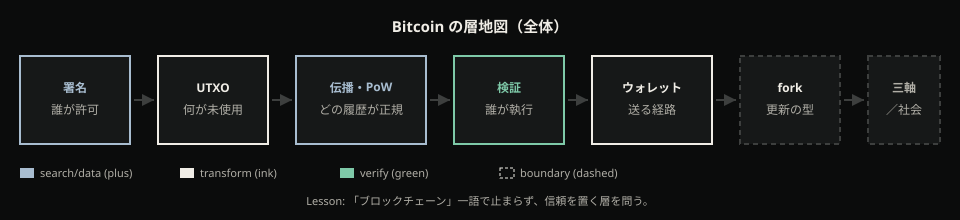
すでに触れている裂け目
あなたはすでに、取引所アプリやニュース見出しで Bitcoin に触れているかもしれない。画面の「残高」と、自分が本当に動かせるものとのあいだに違和感がある。送ったつもりなのに相手は「まだ確認が足りない」と言う。シードを失うと誰のものにもならない。マイニングは浪費に見え、フォークは分裂に聞こえ、他の暗号資産は全部同じに見える——こうした裂け目は、個人の相場センス不足だけの物語ではない。
この記事がすること／しないこと
すること
- 複製可能な世界で二重支払いを防ぐために、Bitcoin が何のために生まれ、どう合成されているかを第一原理から再構築する。
- 署名・UTXO・伝播・PoWとマイニング・ノード検証・ウォレット層・soft／hard fork を、制約が次を強制する順で示す。
- 価値保存は検証可能な性質の到達側面として区切り、購買力結果と分離する。
- Ethereum／Monero（CryptoNote）／USDC 型の三軸で他系との違いを性質として置く。
- 社会的見られ方と目指す世界を、保証レイヤと物語・制度レイヤに分けて独立に読む。
- 鍵・台帳・確認・委任のどこに立つかを読者が言えるようにする。
しないこと
- 価格予言、「今買う／売る」、ポートフォリオ助言。
- 全アルトの銘柄カタログ・時価総額ランキング。
- 特定 ASIC／プールの ROI、個別ウォレット製品の操作全集。
- Lightning ルーティング詳細、Script オペコード百科。
- エネルギー政策の最終道徳判決（コストの役割説明まではする）。
- 「Bitcoin は絶対最善の価値保存」断定。
- 各国規制の法令コンプライアンス手順。
理解の道筋
- まず、コピーがほぼ無料な世界で「送る」が自明でないことと、鍵・委任・確認の裂け目から問いを立てる。
- 次に、Bitcoin が何のために生まれたかを、中央台帳なしの電子現金という問題設定と先行の欠落から再構築する。
- 価値保存は後で到達する側面として予告し、価格の話ではなく検証可能な性質の話だと区切る。
- 署名・未使用出力・伝播・Proof-of-Work とマイニング・ノード検証を、制約が次を強制する順で歩く。
- 送金がウォレット層（鍵・手数料・確認・カストディ）としてどう繋がるかを細かく見る。
- ルール更新の型としてソフトフォークとハードフォークを分け、互換と分岐を取り違えないようにする。
- Ethereum／Monero／USDC 型という三つの対照軸で、「他の暗号資産」との違いを性質として置く。
- 社会からの見られ方の変化と現状を、プロトコル保証の変化と物語の変化に分けて独立に読む。
- 目指す世界と、解かない問題・よくある誤解を独立に置き、自分が鍵・台帳・確認のどこに立つかを回収する。
この記事が回収する日常
入口の火傷はバラバラの失敗談ではなく、後半で層として回収する約束の現象だ。
コピーの世界で、何が「減る」のか
あなたはすでに、取引所のアプリやニュース見出しで Bitcoin に触れているはずだ。画面に「残高」がある。送金ボタンがある。「ブロックチェーン」という単語も、どこかで一度は目にした。それでも失敗や不安のあとに残る説明は、だいたい二つに寄る。「詐欺だった」「相場が悪い」。もう少し自分に厳しい人は、「まだ勉強不足だ」と付け加える。
その帰属のままでは、この先に出てくる仕組みの話が、投資商品のカタログか、謎のハイテク一覧に聞こえやすい。すると読者は、「暴落しないと証明してくれ」「詐欺でないと証明してくれ」と先送りする。この章は、その先送りを止めるための入口だ。Bitcoin がすごいかどうかではなく、あなたがすでに体感している裂け目——デジタルでは「送る」が自明でないこと、主権・委任・確定が日常の語りとずれること——を、共有の事実として固定する。
あなただけが騙されやすいわけではない。同時に、自分がどこに立つか——誰の許可で動き、誰に預け、何をもって「終わった」と言うか——は、後の章で回収する。個人の相場センスだけの問題でも、全部詐欺・全部ギャンブルで終わる話でもない。地図が続く、という期待だけを、いまここで置いておく。
何が「減る」のか——コピーと現金
メールを「送る」。写真を「送る」。ファイルをクラウドに「上げる」。日常のデジタルでは、送り手の手元にもコピーが残りうる。相手が受け取ったあとも、あなたの画面に同じものがある。複製はほぼ無料で、受け渡しの見かけと、一度きりの所有の保証は、別物だ。
現金の札を渡すと話が違う。手元から物理的に減る。相手の手元に移る。あなたが「送った」つもりでも、札はもうあなたの財布にない——少なくとも、同じ一枚は残らない。
デジタル資産の話で多くの人が最初にすり替えるのは、この差だ。画面の「送る」「完了」「反映済み」は、現金の受け渡しと同じ感覚で語られがちだが、媒体がコピーなら、「送る」は複製になりうる。現金性——一度きり減って、相手だけが増えること——は、別の仕組みなしには得られない。
複製と現金の対比

左はファイルやメールの送信。送り手にもコピーが残る。右は現金の受け渡し。手元から減る。中央に立つ問いはひとつだけだ。デジタルで「一度きり」にするには？ この記事全体は、その問いに答えるために、誕生動機から仕組み、対照、立ち位置まで歩いていく。いまは答えを置かない。裂け目だけを、図の一点に固定する。
七つの手触り
日常で繰り返し出てくる手触りは、七つにほぼ収まる。いずれも「あなたが損した話」でも、買い方の攻略でもない。記事が後半で、層ごとの構造として回収する約束の現象だ。ここでは短いカードとして並べ、名前だけ付ける。
シードをなくすと、誰のものにもならない。 手帳に書いた復元用の言葉を紛失し、アプリを入れ直しても数字が戻らない。画面のどこにも「残高」が残らない。これは相場の話でも詐欺の話でもなく、誰が許可できるかが消えた感覚の入口だ。「自分のもの」の感触が、コピーの世界では別物になりうる——主権の裂け目。鍵や署名の仕組み名はまだ出さない。後で、許可がどこに置かれるかを地図に載せる。
取引所アプリの「残高」は、しばしば会社への請求に読める。 画面の数字と、自分が直接許可できる所有は、同じではない。出金が止まったニュースで動けなくなると、その差が急に見える。委任の裂け目だ。ここでは「会社への請求」とだけ言う。請求権の地図や、預け方の帯は後の章で回収する。
「反映済み」と「確認が足りない」が食い違う。 あなたのアプリは完了と出す。相手や慣行は「まだ待つ」と言う。確定は、感覚や UI のラベルではなく、何かの積み重ねとして後で回収する——いまは予感だけ渡す。確定の裂け目だ。
マイニングは、浪費や支配の印象で語られやすい。 「電力を食う」「誰かが牛耳っている」——そうした印象がある、とだけ記す。機構にもエネルギー判決にも踏み込まない。後の章で、追記の防衛と、誰が規則を立法する話ではないかを分ける。
ウォレットを過信し、手数料待ちで詰まる。 送金はボタン一つに見える。待たされ、手数料を読み違え、アプリ名を口座だと思い込む。送金 UI の裂け目の予告だ。鍵・手数料・確認の層は、ウォレットの章で細かく見る。
フォークと聞くと、分裂の恐怖が先に来る。 アップデートの見出しが、価格や陣営の話に跳ぶ。更新＝恐怖、という予告だけ置く。互換と分岐の型は、後で分けて教える。ここでは型名をまだ教えない。
「全部同じ暗号資産」と一括りにされる。 隣の銘柄も同じブロックチェーン語で語られ、時価総額や「どれを買うか」に滑る。対照の必要性の予告だけだ。性質の三軸比較は後の章。銘柄論や買い方は置かない。
七つを並べると、失敗談はバラバラの偶然ではなく、似た型の上で起きている印象が強くなる。同時に、ここではまだ型の機構名を付けない。仕組みの用語は、地図の段階で順に出す。いま必要なのは、「火傷はあなた個人の不運争いだけの物語ではない」という安心と、「だから自分がどこに立つかは後で回収する」という責任の両方だ。
問いの固定
七つの手触りと、複製と現金の対比を通して、記事全体の問いを一つに固定する。
コピーの世界で、何が「減る」のか。主権・委任・確定はどこで割れるか。
「上がる銘柄を教えてくれ」「おすすめウォレットをくれ」と先送りしない。この問いは、いまの体験に向けたものだ。魔法の発明でも、万能の投資商品でもなく、複製可能な媒体で一度きりの受け渡しをどう設計したか、そして日常の画面のどこで主権・委任・確定が割れるか。その地図を、この先の章で順に渡していく。
この先の地図——理解の道筋
続きを読むあなたには、九つの段階で全体がつながっていく。ここでは中身を一言ずつだけ置く。
- まず、コピーがほぼ無料な世界で「送る」が自明でないことと、鍵・委任・確認の裂け目から問いを立てる——いまここにいる。
- 次に、Bitcoin が何のために生まれたかを、中央台帳なしの電子現金という問題設定と先行の欠落から再構築する。
- 価値保存は後で到達する側面として予告し、価格の話ではなく検証可能な性質の話だと区切る。
- 署名・未使用出力・伝播・Proof-of-Work とマイニング・ノード検証を、制約が次を強制する順で歩く。
- 送金がウォレット層（鍵・手数料・確認・カストディ）としてどう繋がるかを細かく見る。
- ルール更新の型としてソフトフォークとハードフォークを分け、互換と分岐を取り違えないようにする。
- Ethereum／Monero／USDC 型という三つの対照軸で、「他の暗号資産」との違いを性質として置く。
- 社会からの見られ方の変化と現状を、プロトコル保証の変化と物語の変化に分けて独立に読む。
- 目指す世界と、解かない問題・よくある誤解を独立に置き、自分が鍵・台帳・確認のどこに立つかを回収する。
捨て読みせずにここまで来たなら、期待してよい。裂け目は雑談ではなく、地図の起点だ。用語の定義は、各段階で必要になったときにだけ開く。いまは「後で地図に載せる」と一度言えば足りる。
現場の一例——送ったつもり、消えたつもり、預けたつもり
友人に「Bitcoin を送る」つもりで、取引所の出金画面ではなく、チャットにウォレットアドレスらしき文字列と、「送ったよ」のスクショを貼った場面を思い浮かべてほしい。あなたの画面には「完了」「反映済み」と出ている。友人側のアプリは、まだ「未確認」や「待ち」のまま。二人は同じ「送った」という言葉を使っているのに、手元の感覚が一致しない。会話はすぐにざわつく。「届いてないんだけど」「詐欺じゃない？」「相場が荒れてるから遅れてるだけでは？」——確定の食い違いが、最初から相場談義と詐欺疑いに飲まれていく。
別の日、同じ友人がシードを紙に書いた手帳を紛失した。アプリを再インストールしても数字が戻らない。サポートに問い合わせても、「復元用の言葉がなければ戻せない」と言われるだけだ。画面のどこを見ても、「残高」が誰のものとしても現れない。許可できる人が消えた——主権の裂け目が、個人の不運として語られはじめる。「もっと慎重に保管すべきだった」という自責と、「結局信用できない」という諦めが、同じテーブルに並ぶ。
別の同僚は、取引所の「残高」を見て「自分の Bitcoin がある」と言い切っている。出金停止のニュースが出た日、動けなくなった。画面の数字は残っていた。それでも動かせない。数字と、直接許可できる所有が、同じ「残高」という言葉で混ざっていた——委任の裂け目だ。会議室ではまた、「あの取引所が怪しい」「相場が悪いときに限って止まる」と帰属が割れる。
この一連の場面で、読者が再構築すべきことは次だ。失敗や不安の主因は、「銘柄の選び方」や「買い時」だけではない。デジタルでは送る＝複製になりうるのに、現金の受け渡し感覚で話が進んでいる。スクショの「完了」は、札が手元から減ったことの代わりにはならない。そこが最初のすり替わりだ。
「反映済み」と「確認が足りない」の食い違いは、相手の性格や詐欺の有無だけでは説明しきれない。同じ出来事が、一方の UI では終わっており、他方ではまだ途中だ。確定は UI の言葉か、何かの積み重ねか——という問いが、ここで生まれる。手順は後の章だ。いまは賭け金だけ渡す。
取引所の数字と、鍵を自分で持つ話を同じ「残高」で呼ぶと、委任が見えなくなる。どちらも画面上は似た数字に見える。切れる層が違う、という予感だけを残す。シード喪失で消える話と、出金停止で動けなくなる話は、どちらも「残高が消えた／使えない」に聞こえるが、裂け目の種類が違う。
チームや友人内の帰属が「詐欺／相場／勉強不足」だけに割れたなら、それは個人の不運争いで終わる。この章の出口は、そこではない。では、コピーの世界で何が減る設計なのか。主権・委任・確定はどこで割れるか——誕生と仕組みへの問いに移す。
次の限界
問いは立った。しかしまだ、サトシ神話（謎の天才が発明した物語）でも、投機誕生（儲かる資産として生まれた）でも、ハイテクのカタログでも語れない。七つの手触りは「ある」と感じただけで、何のためにその裂け目を解く設計が生まれたかがないと、現象はバラバラの失敗談・相場談のまま残る。
次の章では、中央台帳なしの電子現金という問題設定と、先行の欠落から誕生動機を再構築する。それがないと、後の署名や履歴や追記コストの話も、「なぜこの形か」が空転する。問いは固定された。誕生動機が、まだ空だ——そこから先を埋めに行く。
何のために生まれたか
前章で立てた問い——コピーがほぼ無料な世界で、何が「減る」のか。主権・委任・確定はどこで割れるか——は、まだ動機の空欄を残していた。空欄はすぐに埋まりやすい。謎の発明者が予言した、という物語。最初から儲かる資産として設計された、という読み。どちらも後続の機構を、機能カタログか投機装置の部品表に聞こえてしまう。本章ではその空欄を、制約の必然で埋める。Bitcoin は何のために生まれたか。答えは人物伝でも相場でもなく、一文の問題設定にある。理解の道筋の次の段——「どのように・何のために生まれたか」——を、ここで動機側だけ固定する。
問題は「電子現金を、誰も信用せずに送る」こと
白書が最初に固定する欲求は単純だ。オンラインで一方から他方へ、金融機関を経由せず支払いを送れる電子現金が欲しい(*1)。従来のモデルでは、信頼できる第三者——銀行や決済事業者——が台帳を握り、二重支払いを防ぎ、紛争があれば仲介する。その代わり、支払いの不可逆性が弱まり、仲介コストと、誰かを信じなければならない点が残る(*1)。現金の手渡しに近い「渡したら終わり」は、中央の紛争窓口がある限り弱くなる。小さな支払いほど、仲介の摩擦が相対的に大きく見える。問題は利便の改善ではなく、信頼点を置かずに決済を閉じられるかだ。
ここで一度降ろすべき帰属がある。「サトシという天才が世界を予言した」でも、「投機商品として最初から設計された」でもない。誕生動機は、仲介なしの決済という制約を解くことだ。読者語に落とせばこうなる。誰かを信じなくても、同じコインを二人に渡せないようにしたい。前章の「複製の裂け目」は、まさにこの一文の裏側にある。デジタルの世界ではコピーが安い。安いコピーの上で「送る」を現金のように振る舞わせるには、誰かが中央で一意性を裁定するか、裁定なしに一意性を作る仕組みが要る。Bitcoin が選んだのは後者だ。
ブロックチェーンというラベルは、この時点ではまだ空の箱だ。「鎖があるから現金」ではない。箱の中身は、二重支払いを誰が・何のコストで防ぐ設計か——という問いに答えるところから始まる。機構の細部（署名の操作、未使用出力の消費、作業証明の競争）は後章へ預ける。本章が固定するのは、なぜその合成が必要だったかだけである。
署名だけでは足りない
電子コインをデジタル署名の連鎖として定義すれば、「誰が次の所有者への移転を許可したか」は検証できる(*1)。アリスがボブに渡すとき、アリスの署名が「この単位の次の持ち主はボブでよい」と示す。ボブは、公開鍵と署名の対応を見て、許可が本物だと確認できる。所有の許可——ここまでは署名が効く。
だが許可の証明は、その単位がまだ未使用か／どの履歴が正しいかまでは保証しない。署名は「誰が移転を認めたか」を示す。示さないのは「その単位がまだ一度も使われていないか」、そして「同時に別の移転が並んだとき、どちらが正規か」だ。同一の署名付きコインを、ボブにもキャロルにも見せる——いわゆる二重支払い——は、署名検証だけでは止まらない(*1)。アリスは同じ過去のコインを根拠に、二つの移転メッセージを作れうる。どちらも署名としては正しい。検証者は「許可された」としか言えない。ネットワーク上に二つのメッセージが並んだ瞬間、署名の正しさだけでは世界は一つにならない。
署名だけでは足りない
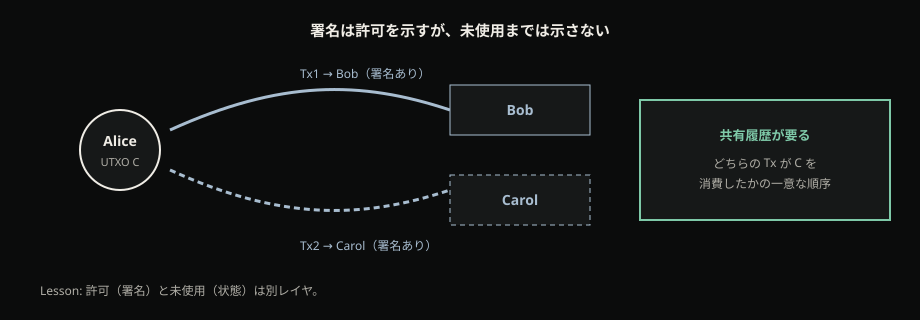
中央の台帳があれば解ける。銀行に「どちらが先か」を聞けば、片方だけ記帳し、もう片方を拒否できる。だがそれは問題設定に戻ってしまう。信頼できる第三者に一意支出を委任するモデルへ退行する。ここが前章の「複製の世界」と直結する。コピーは安い。ファイルを二つ作るのと同じ安さで、二つの「支払い」を並べられる。一意の支出は、署名だけでは作れない。所有の許可と、未使用であることの裁定は、別の仕事だ。hard_claim の前半はここだ。署名は所有の許可には効くが、二重支払いの解にはならない。
共有履歴と、追記のコスト
第三者なしに二重支払いを解くには、部品が二つ要る。
第一に、参加者が参照できる順序付きの共有履歴だ。どの移転がいつ確定したか——同じ単位について、ボブへの移転とキャロルへの移転が並んだとき、どちらが先に履歴へ載ったかを、中央の窓口なしに共有できなければならない(*1)。履歴がなければ、「未使用か」を誰も共通の答えで決められない。履歴があっても順序が共有されなければ、都合のよい並び替えが並行して生きうる。共有とは「誰かが正しいファイルを持っている」ことではなく、参加者が同じ規則で同じ順序を参照できることだ。
第二に、その履歴を勝手に書き換えるのを抑える検証可能な追記コストだ(*1)。共有履歴だけあって追記が無料なら、誰でも都合のよい分岐を量産できる。安い提案で履歴を偽造しうる世界では、順序の合意はすぐに壊れる。生成は高く、検証は安い——そういう非対称があれば、追記のたびにコストがかかり、過去を塗り替えるにはさらに積み上がる仕事が要る、という圧力が生まれる。コストが検証可能であることも要点だ。信じる相手がいなくても、「この追記には仕事が載っている」と確認できなければ、防衛にならない。
白書の提案骨子は、この二つを peer-to-peer の電子現金として合成することだ。タイムスタンプ、作業証明（PoW）、最多の作業が載った鎖——名前としてはここで一度出せる。だが難易度調整、報酬、プール、未使用出力の操作手順は本章では開かない。読者が持ち帰るのは機構マニュアルではなく、「なぜ履歴とコストが合成に入るか」である。hard_claim の後半はここだ。中央なしなら、共有された順序付き履歴と、検証可能な追記コストが必要になる。
先行が埋めた欠落と、まだ足りなかったもの
この合成は、真空から突然落ちてきたわけではない。足りない部品の地図は、すでに断片としてあった。年表の展示——何年に誰が——は最小限にする。各先行は、どの欠落を埋めたか／まだ何が足りなかったかの一文に結びつける。
Hashcash（Back）が示したのは、生成は高く検証は安い proof-of-work トークンだ(*2)。未計測のリソース——たとえばメールの送信枠——を乱用する側にコストを課し、受け手は安く検証できる。Bitcoin が借りるのは「電子現金の完成形」ではない。安価な提案では履歴を偽造しうるという圧力への答えの部品である。コストの非対称は、追記を防衛するレバーの予感になる。誰がどれだけ稼いだか、どんな装置が勝つか、という話ではない。非対称コストという発想の先行だ。
b-money（Dai）が示したのは、計算仕事のブロードキャストと署名付き移転による、分散電子現金のスケッチだ(*3)。全員が台帳を持つ案と、サーバの部分集合に任せる案が並ぶ。Bitcoin が借りるのは実装仕様ではない。中央銀行なしの電子現金という問題意識と、部品の予感である。バイト互換の旧版でも、完成したプロトコルでもない。スケッチと、後の合成解を取り違えてはいけない。人名や年号の並びではなく、欠落の位置だけを地図に残す。
先行の欠落地図
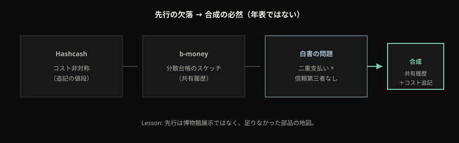
どちらも Bitcoin そのものではない。出口は年代順の展示ではない。署名だけでは足りない。コストの非対称と、分散台帳のスケッチはあった。だが二重支払いを第三者なしに解く合成——許可（署名）と未使用の共有状態とコスト付き履歴を、一つの peer-to-peer 電子現金として閉じる解——としては未完だった。欠けていたのは部品のカタログではなく、部品を一つの決済システムとして閉じる必然の一点だ。白書が、鎖とコストと P2P をその一点に合成した。先行は博物館ではなく、欠落の地図である。
合成の一点と、次に見るもの
場面を一つ置く。アリスがボブに「同じ 1 単位」を約束し、同時にキャロルにも同じ単位を渡そうとする。デジタルファイルのコピーに近い。ボブとキャロルは、それぞれ自分宛ての署名付きメッセージを見て「許可された」と判断しうる。問題は許可ではなく、同じ単位が二人分に増えていないかだ。手段ごとに、何が起き、何が欠けるかを表にすると、本章の必然が一度に見える。
| 手段だけある場合 | 何が起きるか | 欠けているもの |
|---|---|---|
| 署名だけ | アリス→ボブ、アリス→キャロルの両方に「許可した」署名が付きうる | 一意支出（どちらが未使用か） |
| 銀行の中央台帳 | 銀行が片方だけ記帳し、もう片方を拒否できる | 信頼第三者なし（問題設定に反する） |
| 共有履歴はあるが追記が無料 | 誰でも都合のよい履歴を並べ替え／分岐を量産できる | 検証可能な追記コスト |
| 履歴＋コスト（本章の必然まで） | 参加者が同じ規則で順序を共有し、書き換えにコストがかかる | （実装の詳細は後章） |
読者が自分の言葉でこう言えれば、本章の worked example は完了だ。署名は所有の許可には効くが、二重支払いの解にはならない。中央なしなら、共有履歴と追記コストが要る。銀行に聞けば解ける話を、聞かない条件で解こうとした——その一点が誕生の動機である。
出口フレーズを一文に畳む。Bitcoin は、複製可能な通信路上で二重支払いを防ぐために、許可（署名）・未使用の共有状態・コスト付き履歴を一つの peer-to-peer 電子現金として合成した——これが「何のために生まれたか」の答えである。各層のフル機構はまだ開かない。ブロックチェーンというラベルの本体は、二重支払い制約と追記コストの側にある、という種だけをここに残す。ラベルを見ただけで現金だと結論しない——何を防ぐ設計かを問う入口が、本章のもう一つの持ち帰りだ。
誕生動機——中央なしに二重支払いを解く設計——は見えた。しかし読者の語彙には、なお「価値保存（デジタルゴールド）として語る引力」が残る。動機を見た直後でも、「だから上がる資産として生まれた」へスライドしやすい。機構（署名・未使用出力・作業証明）に入る前に、価値保存を中心テーゼではなく到達側面として区切らないと、以降の章が投機の物語に吸い込まれ、プロトコルが保証するものと市場の結果が混線する。次章の必然はここだ。誕生は見えたが、価値保存の引力が残る——機構の前に、到達側面として一度区切る。
次の限界
誕生動機は見えた。しかし「価値保存（デジタルゴールド）として語る引力」が残る。機構に入る前に、SoV を中心テーゼではなく到達側面として区切る——次章へ。
価値保存は到達側面
前章までで、Bitcoin が何のために生まれたか——中央の台帳係なしに、複製可能な通信路で電子現金を通す——という問題設定は共有できた。それでも市中の引力はすぐ戻ってくる。友人や SNS がチャートを添え、「インフレだからデジタルゴールドを買え。供給は限られている」と勧める。価格の線と「価値保存」が同じ語で重なり、買う／売るの話と、性質の話がまだ分かれていない。
本章はその引力を、売買の助言でも相場の解説でもなく、性質の地図として一度だけ丁寧に降ろす。記事全体の中心テーゼは、なお前章の電子現金問題である。価値保存（store of value; SoV）は、あとから語りうる到達側面であって、ここから先の署名・未使用・伝播を「価格を支える装置」に読み替えてはならない。投資判断を期待しなくてよい——本章の仕事は、混同をほどき、機構へ戻る余地を残す区切りだけだ。
「デジタルゴールドだから買え」を降ろす
メタファーは便利だ。金や希少・耐久の語りに触れうる。だがメタファーは売買指示ではない。「デジタルゴールド」と聞こえた瞬間に、チャートの成績とプロトコルの候補性質が一つの文に溶けやすい。本章が拒否するのは、その溶けである。
友人の勧めを仕分けるなら、問いを二つに割れば足りる。第一に、「供給が検証可能か／履歴の改訂にコストがかかるか」——これは候補性質の側であり、プロトコルが語りうる範囲に近い（仕組みの詳細は後章）。第二に、「だから購買力が上がる／今買え」——これは市場結果と助言であり、プロトコルの外にある。本章は後者を扱わない。前者の語彙だけを残し、機構へ戻る許可を渡す。勧めを断っても、電子現金の機構を学び続けてよい——それが本章の成功条件である。
お金が担う三つの役割
価値保存を語るなら、まず制度の入門語彙で固定する。イングランド銀行の四半期紀要入門は、貨幣の役割を三つに分ける——価値の保存（store of value）、計算単位（unit of account）、交換手段（medium of exchange）である。価値の保存とは、ある程度予測可能な仕方で時間が経っても価値を残すことが期待されるもの、と彼らは置く。何百年前に掘られた金や銀は今日なお価値を持ちうるが、腐る食料はそうではない、という対比である (*4)。
交換手段は、明日も使える見込みがあって初めて強くなる。価値保存として崩れると、人々は別の単位へ逃げて売買し始めることがある——制度入門が挙げる古典例は、第一次世界大戦後のドイツ・マルクである (*4)。ここで重要なのは道徳ではない。機能の分離である。計算単位と日常の交換手段として、円やドルは極めて強い。それは政策・法・ネットワーク効果が支える信頼の結晶だ。同時に、現代の貨幣は広く信頼された特別な IOU（現金・銀行預金・中央銀行準備）であり、公衆が保有する大半は銀行預金である、と英中銀は述べる (*4)。IOU としての強さは発行・決済制度への信頼に依存する。「法定通貨が使えている」ことと、「発行ルールを自分で検証できる希少として、長い間きれいに購買力を保存できる」ことは、同じ命題ではない。優劣の判決ではない——語彙の整理である。銀行預金が請求権であるという糸は、のちのカストディ対照へ残すだけでよい。
希少を検証する、という古い宿題
制度語彙のとなりに、補助のフレームを一つだけ置く。Nick Szabo の個人エッセイ Shelling Out は、貝殻・牙・家財といったコレクタブル（収集可能な希少物）が、現代マネー以前に原型的な価値保存・交換の媒体になりうると論じる。それは単なる装飾ではなく、耐久・検証可能性・安く増刷できないことといった、貨幣候補の性質として語られる属性を持っていた。供給が製造業によって一気に膨らめば貨幣性は薄れ装飾へ退化する——希少の硬さは、歴史上「気分」ではなく製造／増刷コストの話だった、と読む (*6)。
これは人類学・進化的な読みの補助である。プロトコル仕様の権威ではない。「だから Bitcoin が最善の価値保存である」へ飛ばない。個人エッセイを一次機構根拠にもしない。adapt の上限はここまでだ——希少を語るとき、検証や増刷コストが昔から論点だった、という補助線だけを借りる。
検証コストの梯子
そこから近代までの道を、検証の置き場の移りとして一枚で見る。実物や貴金属（供給膨張にコストがかかる）→ 兌換を約束した紙幣（持ち運びは紙、錨は金属側に残る）→ 兌換義務を外した裁量的法定通貨（政策の自由度が上がり、価値保存は制度への信用に寄る）→ その先に、公開手続きとして検査できる供給制約、というデジタル上の選択肢。便利さは右へ進みやすい。失われやすいのは、発行体を信じなくても検査できる希少性である。左から右は便利さの移動であり、銘柄の成績ランキングではない。法定通貨が劣っているとも言わない——交換と単位では覇権的である。問うのは別のことだ。「発行ルールを、自分で検証できるか」。
検証コストの梯子

図のそばで持ち帰る対比は短い。プロトコル内で語りうるのは、発行スケジュールと履歴改訂のコスト構造といった検証可能な候補性質まで。需要・為替・将来の購買力・相場の成績は、市場と制度のレイヤ——プロトコル外である。値段の線を梯子に重ねない。金と Bitcoin の成績比較表も、どの銘柄が「硬い」かのランキングも、ここには置かない。
1971——兌換の錨が外れた背景
二十世紀の区切りとして、第二次世界大戦後のブレトン・ウッズ体制を置くと分かりやすい。多くの通貨はドルに（例外的に調整可能な形で）結ばれ、ドルは金一オンス＝35ドルという交換比率で金と結ばれていた。価値保存の最終的な錨は、なお金属側に残っていた——少なくとも公式の対外交換においては。1971年8月15日、国際収支の圧力やインフレ、金の取り付け懸念などの背景のなかで、ドルの金兌換窓口が閉じられる。連邦準備制度史は、これにより国際通貨体制が実質的にフィアット（不換）へ転じ、ブレトン・ウッズの終わりの始まりになった、と要約する (*5)。
この転換を「悪役の物語」にすると誤解が増える。政策には景気・雇用・国際収支という別の制約がある。本章が取りたい命題は狭い。価値保存の質が、商品の物理制約から、主権者の裁量と信用の維持能力へ移ったという構造変化である。円やドルが壊れた道具だと言いたいのではない。Bitcoin の価格史や投資結論にも使わない。背景として置くのは、「希少の最終裁定がどこに載っているか」が制度史のうえで動いた、という一点だけだ。
候補性質とプロトコル外
ここまでを一文に圧縮する。検証可能な供給と、履歴改訂にかかるコストは、価値保存の候補性質である。購買力の将来結果はプロトコルの外にある。 プロトコルが言いうるのは、発行のスケジュールと、履歴を覆すことのコスト構造まで（その仕組みは後章）。需要が集まるか、為替がどう動くか、明日の購買力が上がるか下がるか——それは市場と制度の変数であり、規則の検証だけでは閉じない。
友人の一文を、BoE の語で言い換えてみる。「インフレだからデジタルゴールドを買え」は、価値保存への期待と、相場への助言と、ときに交換手段／計算単位の話が混ざっている。期待の側に検証可能な供給制約を置く議論はありうる。助言と成績の側は、本章の外だ。また「価値保存」が指す対象自体も一枚岩ではない——検証可能な希少を語る語りと、発行体による 1:1 償還の IOU を語る語りは、のちに別の軸で対照する。いまは割れがあることだけを予告する。
到達側面として置く
主張の上限をはっきりさせる。法定通貨が壊れているから Bitcoin が要る、ではない。交換と単位で強い世界のうえで、価値保存に「検証可能な供給制約」を足す選択肢が、デジタルではじめて開かれうる——というのが本章の上限である。記事の背骨は、なお複製可能な通信路で中央なしに電子現金を通す、という制約と必然である。SoV は、その設計が後から語りうる側面であって、中心テーゼではない。
性質と成績は別時計だ。売買助言も、「法定からの逃避」を煽る語りも、ポートフォリオ配分の話も、範囲外である。読者は SoV を一度棚上げしてよい。チャートを閉じ、機構へ戻る許可がある。到達側面を厚くしすぎると中心テーゼ化する——だから本章は短く、鋭く区切る。
機構へ戻る——署名と未使用
区切りはできた。だが、どうしてデジタル単位が「同じものを二度使えない」と言えるのかは、まだ黒い箱のままである。貝殻は物理的に一つしか渡せない。銀行預金は台帳係が順序を決める。Bitcoin が中央なしの電子現金を目指すなら、誰が許可したか（署名）と何が未使用か（UTXO）が先に要る。「供給が限られる」「改訂にコストがかかる」と聞いても、所有と状態の表現が見えなければ、候補性質の中身は手触りにならない——性質の地図だけでは、機構は開かない。
次章は、価値保存の語りを棚に置いたまま、許可と未使用——署名の連鎖と、未使用出力の消費——へ入る。所有がどう表現され、二重支払いが規則のどこで弾かれるか。伝播と Proof-of-Work、マイニングの本論はその先だ。ここで手を止める。次は機構だ。
次の限界
SoV を性質と市場で区切っても、「誰が許可し、何が未使用か」はまだブラックボックスだ。次章で署名と UTXO に降りる。
許可と未使用：署名と UTXO
前章までで、Bitcoin が何のために生まれたか——中央の台帳係なしに、複製可能な通信路で電子現金を通す——という問題設定は共有できた。価値保存の話は、検証可能な性質の候補として一度横に置いた。ここから先は仕組みに入る。ただし「ブロックチェーンがある」で満足してはならない。持ち帰るべき最初の切れ目は、次の二つの問いだけだ。誰が許可したか。何が未使用か。
入場のころ、送金はアプリの残高が減り相手の残高が増える手続きに見えていることが多い。その比喩は便利だが、Bitcoin の内部では「口座の数字を書き換える」のではなく、過去の出力を消費し、新しい出力を作る。許可はその消費を正当化する署名の側にあり、未使用はまだ消費されていない出力の側にある。この二つを一枚岩のまま「暗号化で守られている」と読むと、二重支払いの問題がどこに属するかが見えなくなる。この章の終わりに、許可と未使用が別制約だと指で示せればよい。正規の履歴をどう共有するか、誰が規則を執行するかは、まだ空のまま次へ残す。四問を一度に語ると、ブラックボックスが戻る。
本章が担うのは機構の入口——署名連鎖と UTXO——の二層だけである。ウォレット製品の操作手順、手数料の入札市場、マイニングの供給競争、合意規則の改訂劇には入らない。必要なのは、送金画面の直感を一度解体し、検証可能な二つの問いに立て直すことだ。
電子コインは署名の連鎖である——誰が許可したか
Whitepaper は電子コインを、所有者から所有者へとつないだ デジタル署名の連鎖 として定義する (*1)。ある出力を次の所有者の条件へ移すとき、現所有者は秘密鍵で署名する。検証者は公開された鍵と署名を追い、その移転が権限ある者によって許可されたか を検査できる。コインとは、金庫の中身の比喩ではなく、許可の履歴を公開検証できる鎖である。秘密鍵を持つ者が支出権限を示し、公開鍵（およびその条件）が次の受取側を定める。ここまでが「誰が許可したか」の層だ。
模式として鎖を一本だけ置く。出力 O0 を Alice が制御している。Alice は O0 を入力として消費し、Bob の鍵条件への新しい出力 O1 を作る——その許可が Alice の署名である。のちに Bob は O1 を消費し、Carol への O2 を作る——許可は Bob の署名である。検証者は O0→O1→O2 を遡り、各矢印が正当な署名でつながっているかを見る。ここで得られる答えは「権限ある者がその移転を許可したか」であり、「そのコイン単位がまだ未使用か」ではない。鎖を追えることと、鎖の先端がまだ使われていないことは、別の検査である。
重要なのは、この層が証明することの境界だ。署名連鎖は移転の形を検証可能にする。だが Whitepaper 自身が動機として書くように、デジタル署名だけでは二重支払いを防げない (*1)。同じ権限者が、同じ「コイン」を示す署名付きメッセージを二人に渡すことは、署名検証だけを見ればどちらも「許可された移転」に見えうる。暗号が壊れているのではない。同じ鍵で二つのメッセージに署名することは、暗号的に「不正な署名」ではない。問題は どの支出が有効か／先か の側にあり、それは許可の証明だけでは閉じない。許可の証明と、一度きりの支出の証明は別の制約なのだ。
許可と未使用
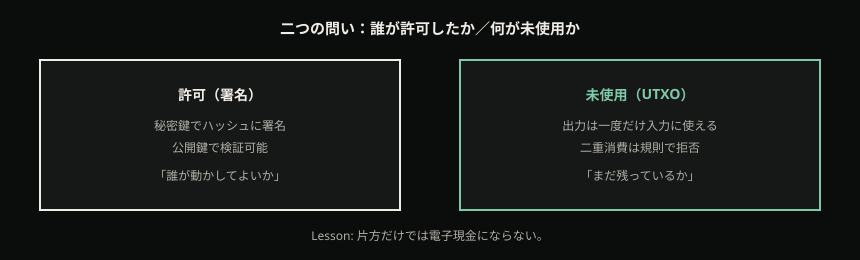
Electronic coin as a chain of digital signatures
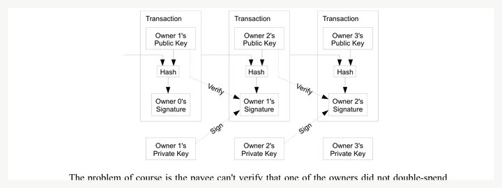
図は二層に分ける。上段は署名連鎖——各矢印に「許可」。下段は同じ出力からの二又（Bob 向け／Carol 向け）を点線で描き、「署名は両方妥当に見えうる → 未使用が裁く」と注記する。許可だけ見ると両方が「正しい移転」に見える裂け目を、視覚で固定する。読者が図を指さして「上は誰が許可したか、下の二又は未使用が裁く」と言えることが、この節の出口である。
署名だけでは「まだ使っていない」は分からない
だから次の問いが必要になる。その許可が、まだ未使用の出力に対するものか。 銀行の口座モデルでは、残高という一つの数字が「まだ使える量」を体現する。行を書き換えれば状態が更新される、という直感だ。Bitcoin の基本形では、未使用の単位は トランザクション出力 として散らばって存在し、各出力は入力として 一度だけ 消費される (*7)(*8)。
Developer Guide のトランザクション説明は、この形を機械の言葉で固定する。トランザクションは、以前の出力を入力として消費し、新しい出力を作る (*7)。入力側には、その出力を使う権限を示す署名（scriptSig や witness）が付く (*7)。支払先への出力と、自分へ戻すお釣り出力、そして入力合計と出力合計の差としての手数料——これらはバイト列の構造として明示される。ただし本章では手数料を「市場でいくらになるか」「どの順番で取り込まれるか」までは追わない。今必要なのは三点だけだ。(1) 入力は過去の出力への参照である。(2) 署名はその消費の許可である。(3) お釣りは口座に戻る残金ではなく、新しい未使用出力である。
ここで口座比喩が崩れる。1.0 BTC の出力を入力にし、0.3 BTC を支払うトイを考える。銀行アプリなら「残高が 0.7 になった」と見える。Bitcoin では、元の 1.0 出力は 消費済み になり、代わりに 0.3 の新出力（受取側）と 0.7 の新出力（お釣り・自分側）が並ぶ（手数料を無視したトイ）。画面の「0.7」は残口座セルではなく、新しく生まれた UTXO である。部分を切り取って残りが同じ箱に残るのではなく、箱ごと消費し、箱を作り直す。複数の入力を束ねて一つの支払にする場合も同じ骨格だ——選んだ出力はすべて消費され、新しい出力列が生まれる。残高アプリが一つの数字に畳むのは、その新しい集合の集計ビューにすぎない。
未使用の集合が、状態になる——UTXO
フルノードが追う「使えるコイン」の見取り図は、アカウント表ではなく、まだ使われていない出力の集合——UTXO（Unspent Transaction Outputs） である (*8)。有効な入力は、この集合に属する出力だけである (*8)。ある鍵の組が制御できる UTXO を足し上げたものが、画面上の「残高」に見える。数字は似ていても、状態の表現は違う。行を書き換えるのではなく、出力箱を消費し、別の出力箱を並べる。アカウントモデルとの対照は後の比較章へ残し、本章では「Bitcoin の基本形は出力の未使用集合である」とだけ置く。
UTXO の消費とお釣り
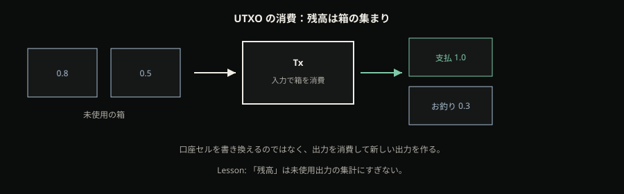
図は消費前後を並べる。左：未使用の箱（UTXO）が並ぶ。中央：入力として箱が吸い込まれる。右：支払とお釣りとして新しい箱が並ぶ。横に小さく、口座元帳の「残高セル書き換え」図を置き、対照の誤り として赤く潰す。同じ「0.7」でも、セル更新と新出力生成は別の状態表現だと一目で分かるようにする。許可の図（前節）と消費の図（本節）を並べると、二つの問いが視覚でも分離する。
読者がここで潰すべき混乱を、短く釘で止める。
- 署名 ≠ 一意支出。 許可の証明と未使用の証明は別制約 (*1)。署名が通っても、同じ出力を二度使う試みは未使用規則側で止まる。
- 残高 ≠ 銀行口座行。 残高は UTXO 集合の集計ビューである。原子単位は行ではなく、個々の未使用出力である (*8)。
- お釣り ≠ 口座に戻る残金。 お釣りは新しい出力の作成である (*7)。古い箱の「余り」が残るのではない。
- 「暗号化が強いから二重支払いできない」ではない。 二重支払いは 規則（一度きり消費） と、のちの 共有履歴 で扱う問題である (*1)(*8)。
- 「ブロックチェーンがある」＝仕組み理解、ではない。 許可・未使用・正規履歴・執行の四問のうち、本章は前の二つだけを開ける。
- UTXO ≠ 「残高という名前の口座」。 語が似ていても、状態機械が違う。集計数字を口座行と読み替えると、お釣りと二重支払いの説明が崩れる。
取引所アプリの画面残高が、自分の鍵が制御する UTXO の合計なのか、会社への請求権（IOU）なのか——その判定は後の章の仕事だ。本章が固定するのは、「残高」という言葉が Bitcoin の基本形では 未使用出力の集計 を指す、という中身の側である。シードやバックアップの手順は製品マニュアルとして出さない。許可＝鍵の署名、という接続だけを薄く残す。
二つの問い、四つのうちの前半
判断の型として持ち帰るなら、こう切るとよい。
| 問い | 何が答えるか | 本章で到達すること | まだ空 |
|---|---|---|---|
| 誰が許可したか | 秘密鍵による署名；電子コイン＝署名連鎖 (*1) | 移転の公開検証；支出権限の証明 | — |
| 何が未使用か | UTXO；出力は一度だけ入力に使える (*7)(*8) | 二重支払い禁止の直接表現；残高＝UTXO 集計 | — |
| どの履歴が正規か | （予告）共有された順序付き履歴＋追記コスト | 触れない／空と明示 | 伝播・PoW・マイニング |
| 誰が規則を執行するか | （予告）同一規則での検証 | 触れない／空と明示 | フルノードと薄い検証 |
署名連鎖が許可を示し、UTXO の一度きり消費が未使用を示す。履歴をどう共有し、改ざんに値段を付け、誰が規則を執行するかは、まだ空だ。空だと分かったこと自体が、次章への入口になる。「ブロックチェーンがあるから安全」で止まった読者は、上表の前二行を指せれば、その止まり方から一歩出ている。
機構の叙述順を一度だけ振り返る。まず電子コインを署名連鎖として定義し、「誰が許可したか」を公開検証可能にする (*1)。次に、トランザクションが入力の消費と新出力の生成であることを置き、お釣りを新出力として固定する (*7)。最後に、未使用出力の集合が状態になり、各出力は一度だけ入力に使える——これが二重支払い禁止の直接の規則表現である (*8)。許可の層だけでは足りず、未使用の層が必然として続く。逆順に語ると、「口座があるから署名がある」ように聞こえ、誤解が戻る。
読後チェックは短い。署名連鎖を指して「誰が許可したか」と言えるか。お釣りを「新出力」と言えるか。同一出力の二度使いが規則で止まると言えるか。残高を口座行ではなく UTXO 集計だと訂正できるか。四つが揃えば、本章の二つのノードは手触りを持ったことになる。揃わなければ、図と Lab に戻る。
具体例
許可だけの世界。 Alice が制御する出力 O1 がある。Alice は「O1 を Bob へ」という移転に署名し、同時に（または直後に）「O1 を Carol へ」という移転にも署名する。どちらも署名検証は通りうる——鍵は Alice のものであり、メッセージ形式も妥当だからだ (*1)。未使用規則がなければ、複製媒体では Bob と Carol の両方が「受け取った」ことになりうる。これは C1–C2 で開いた裂け目——デジタルでは「送る」が複製であり、署名だけでは一度きりが保証されない——の再来である。許可は示せた。未使用はまだ示せていない。図の二又点線が、この物語の視覚版である。
お釣りで口座誤解を潰す。 入力は Alice の 1.0 BTC 出力ひとつ。支払は Bob へ 0.3 BTC。手数料を無視したトイでは、トランザクションは (a) 1.0 を入力として消費し、(b) Bob 向け 0.3 の新出力と (c) Alice 向け 0.7 の新出力を作る (*7)。事後の「Alice の残高 0.7」は、古い行が書き換わった結果ではなく、新しい UTXO の金額である。もし手数料 0.01 をトイに足すなら、入力合計 1.0、出力合計 0.99、差が手数料として構造に現れる——だが本章ではその差の「市場」までは追わない。Lab で箱が二つに割れる瞬間が、口座比喩の解体点だ。
二重支払いの玩具。 同じ O1 を入力にした TxA（Bob へ）と TxB（Carol へ）を並べる。規則上、有効な入力は未使用出力のみであり、出力は一度だけ使用できる (*8)。一方が O1 を消費すれば、他方は無効になる。Lab では再利用ドラッグが拒否される。どちらが最終的に正規履歴に残るか、一時的に両方見える遅延があるか——は次章。本章に残すのは一文だけだ。規則が一度きりを要求する。 勝者決定のネットワーク話を先取りすると、未使用の手触りが溶ける。
次の限界
「誰が許可し、何が未使用か」は見えた。しかし未使用状態の規則だけでは足りない。個々の検証者が同じ UTXO 集合をどう共有し、矛盾する支出が物理遅延で同時に見えうる枝をどう扱い、履歴の追記に検証可能なコストをどう付けるか——がまだ空のままである。許可と未使用の次は、伝播と Proof-of-Work、そしてマイニング である。それをネットワーク全体で一つに保つ値段は、次章（C5）で開く。ここで手を止める。
伝播、PoW、マイニング
前章までで、「誰が支出を許可したか」（署名）と「何がまだ使われていないか」（UTXO）は手触りになった。だが複製可能なネットワークでは、同じ未使用出力を巡る話が、世界の別の端で別の順に届く。アリスがボブへ送った支出と、同じ出力をキャロルへ向けた支出が、遅延のあいだに両方「見える」ことがある。許可の検証も、未使用規則も、局所ではどちらも通るように見える——どちらの履歴が正規かを決める共通の時計がないからだ。
白書が要求するのは、参加者が参照できる共有された履歴と、その追記に対するコストである(*1)。署名連鎖だけでは二重支払いが閉じない、という動機づけは前章で一度触れた。本章はその続きを開く。伝播の物理が一時に二つの先端を許し、最終は最多作業の有効鎖へ収束すること。ヘッダのハッシュ目標が、追記の検証可能な値段になること。そして報酬・難易度・プールが、履歴防衛の計算供給を勧誘する競争であること——マイナーはその競争の供給側であり、規則の立法者ではない。
入口の直感を先に置く。ニュースや会話では、マイニングは「お金を刷る機械」「電気の浪費」「巨大プールが支配している」と読まれやすい（P4）。画面に支払いが映れば「確定した」、相手が「あと数確認」と言えば「意地悪」——そう感じる裂け目もある（P3）。本章の仕事は、否定のための否定ではない。伝播 → 追記の値段 → 防衛計算の勧誘という必然の鎖に、その印象を置き換えることだ。投資回収や装置銘柄の助言は置かない。エネルギー政策の最終判決もしない。機構として何が起きているかを、再構築できる厚さで書く。薄いと、入口の直感が章の終わりまで生き残る。
順番を予告する。まず遅延と一時分岐。次にヘッダ目標という値段。難易度というサーモスタット。報酬とプールという勧誘の形態。書き換えコストと確認。エネルギーは役割まで。最後に、マイナーは立法しない、を持ち帰り、執行と送金の空欄を次章へ渡す。薄い一覧ではなく、一段が次の一段を強制する鎖として読む。許可と未使用だけでは、遅延のある世界で「どの履歴が正規か」が閉じない——その空白を埋めるのが本章の唯一の仕事である。
遅延がある世界 — 一時に二つの先端
ノードはトランザクションとブロックを、ベストエフォートで隣へ伝える。光速と混雑と経路差がある以上、全員が同時に同じ先端を見るとは限らない(*8)。地球の一端で見つかった有効なブロックが、もう一端へ届くまでには時間がかかる。そのあいだに、別の場所でも別の有効候補が生まれうる。短いあいだ、規則上どちらも妥当な二つの枝が両立する——一時フォークは、設計の欠陥というより、分散伝播の物理である(*8)。
重要なのは「どちらも妥当」の意味だ。二つの先端は、それぞれ親ブロックへのポインタを持ち、含まれる取引の署名も未使用規則も局所検査を通る、ということがありうる。壊れたデータが二つあるのではない。まだ全球で一本化されていない、二つの候補履歴がある。中央の台帳係がいれば、窓口が片方だけを記帳して終わりだ。いない世界では、候補が短時間並びうることを前提に、収束規則を置くしかない。
ここを「バグ」と読むと、あとの確認の話が道徳になる。「正しい一本にすぐ揃うべきだ」という期待が、「画面に出たのに待たされる」への怒りを生む。だが揃わない瞬間があること自体が、中央の司会者がいない世界の帰結だ。揃えるための規則は、別にある。
収束の規則は単純に聞こえるが、取り違えやすい。各参加者は、単に「ブロックの個数が多い鎖」ではなく、積み上がった作業（Proof-of-Work）が最も多い、なおかつ規則上有効な鎖を正規とする(*1)(*8)。高さだけの直感は危うい。同じ高さでも、載っている作業量が違えば、選ばれる鎖は変わりうる。浅い枝の上で受け取った支払いは、のちに別枝に作業が寄り、再編成されたとき無効になりうる。自分の画面に「受取」と出た瞬間は、局所の観測にすぎない。相手が待つ確認数は、その枝が伸びて再編成が高価になるまでの累積作業の話である——ここが P3 の裂け目の入口だ。
白書の安全の語り方も、この地形の上にある。過半の計算力が正直な鎖を伸ばすなら、攻撃者が過去を塗り替えて追い越すのは難しくなる、という形の仮定だ(*1)。本章では百分比の教義を深追いしない。必要なのは、「最終は会議の多数決ではなく、有効な鎖に載った作業の総量で決まる」という一点である(*1)(*8)。
一時分岐
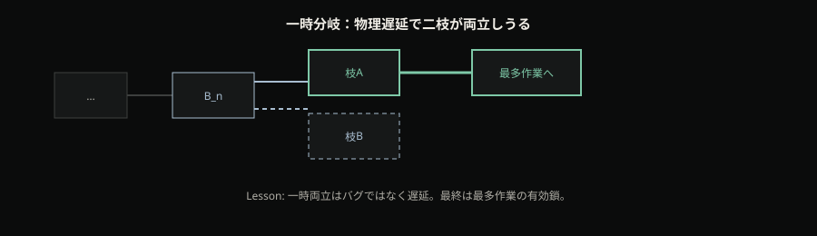
Timestamp server
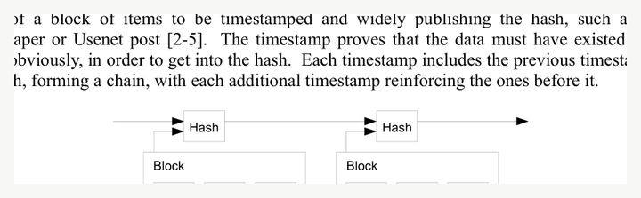
場面を具体にする。カフェで客が支払いを送る。店員の端末は数秒で「受取」を表示する——その端末が見た先端では、支払いを含むブロックが載った。会計ポリシーは高額について「6確認」を要求する。客は「もう反映されたのに、なぜ待つ」と感じる。帰属を誤ると、店員が意地悪だ、あるいはシステムが壊れている、になる。実際には、店員は一時分岐と再編成のリスクを価格付けしている。確認は、最多作業の鎖がその支払いの上に伸び、書き換えが高価になるまでの待ちである。どちらが親切かではなく、時計の単位が違う（R3）。
同じ支払いでも、少額の飲み物と高額の機材では、待ちの値段が違う、という読みもできる。ゼロ確認で渡すのは、再編成が起きても損失が小さい、という賭に近い。深く待つのは、追い越しコストを買っている。売買の是非ではなく、リスクをどの時計で測るかの差だ。この差を「画面が嘘をついた」と読むと、機構が見えなくなる。相手の確認要求は、しばしば不信の表明ではなく、遅延のあるネットワークへの会計である。
追記に値段を付ける — ヘッダと目標
一時分岐が物理なら、次の問いはこうなる。安価に履歴を提案できるなら、二重支払いの競争は終わりなく続く。 誰でも都合のよい枝を量産できれば、「最多作業」という規則も空転する。遅延で二つの先端が並ぶこと自体は物理だ。だが、その先端をタダで量産できるなら、収束は永遠に撹乱される。必要になるのは、提案（生成）は高く、検証は安い非対称である。
Hashcash はその形の先行である(*2)。メールの乱用などを抑えるために、送信側にハッシュ探索のコストを課し、受信側は安く検証できる——生成高く検証安い proof-of-work トークン。Bitcoin はこれを、共有履歴のブロックヘッダに載せる(*1)。スパム対策の部品が、正規の次履歴を提案する権利の値段になる。系譜は薄い一文で足りる。重要なのは必然だ。安価な提案では履歴を偽造しうる——だから追記に検算可能なコストが要る。
機構を一段だけ開く。ブロックヘッダには、前ブロックへの参照、取引集合の要約、時刻、難易度に相当する目標情報、そして探索用のフィールドなどが載る。マイナーはその一部（nonce など）を変えながらハッシュし、ネットワークが定める目標以下のダイジェストを探す(*8)(*9)。目標以下——たとえば十分に小さい数値——であることは、膨大な試行の末に偶然当たった結果として読む。見つけた値は「この作業をした」ことの証明になる。他者は、ヘッダを一度ハッシュし直すだけで、目標を満たすかを検証できる。司会者の判子も、秘密の委員会も要らない。追記の値段は、誰でも検算できるコストとして置かれる(*8)(*2)。
非対称が効く理由を、対比で固定する。生成側は、当たりが出るまで何度もヘッダを変え、何度もハッシュする。検証側は、提示されたヘッダを一回ハッシュし、目標と比べるだけだ。これが Hashcash 系譜の骨であり(*2)、Bitcoin ではその骨が「次の正規履歴候補」に刺さっている(*1)(*8)。信頼できる第三者に「この追記は高い」と言わせるのではなく、計算結果そのものが値段の証跡になる。安価な検証があるからこそ、多数の参加者が同じ規則で候補を検算し、高い生成コストがあるからこそ、偽の候補を無限にばら撒くことが難しくなる。片方が欠ければ、防衛は崩れる。
ここが「ブロックチェーンがあるから安全」という空のラベルを埋める地点だ。鎖があること自体が防衛ではない。鎖の各環に、検証可能な作業が載っていることが防衛である。目標が厳しければ、偶然に当たるまでの試行は増える。目標が緩ければ、提案は安くなり、書き換えも安くなる。値段は、信頼の物語ではなく、ハッシュと目標の関係として読める。R3 への接続もここからだ。「確定」は UI の緑チェックではなく、その履歴を書き換えるのに要する追加作業の見積もりである。確認数は、その代理指標になる。ラベルではなく値段——それが本章の PoW の核である。
ヘッダと目標
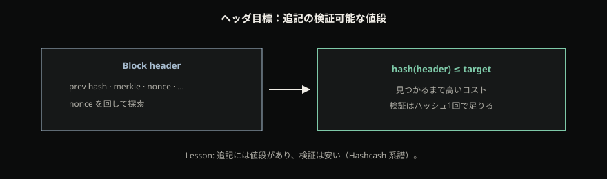
Proof-of-work chain
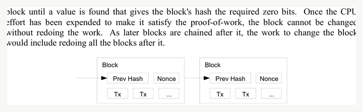
難易度はサーモスタット
参加する計算が増えれば、同じ目標なら出塊は速くなる。速すぎれば確認の時計が狂い、遅すぎれば送金が滞る。Bitcoin は、おおよそ 2016 ブロックごとに難易度を再調整し、目標の出塊間隔を保つ(*8)。これは「誰かを恣意的に排除する壁」ではない。防衛コストのサーモスタット——間隔フィードバックである。
環境に応じて総作業は動く。履歴を書き換える側も、同じ値段の地形に直面する。難易度が高いから「誰かが支配している」のではなく、目標間隔を守るために目標が動いている。速さ自慢の指標として読むと層がずれる。読むべきは、追記と rewrite の値段が、参加計算量に合わせて追従することだ。
サーモスタットの帰結を一文で固定する。計算供給が増えても、規則が間隔を保とうとする。防衛に使える作業の総量は環境とともに変わり、過去を塗り替える側もその総量と戦う。難易度は立法のレバーではなく、間隔のフィードバックである(*8)。「難易度を誰かが恣意的に上げて排除している」という読みは、フィードバックを政治劇に取り違えている。排除の可否や検閲の議論は別層で起きうるが、難易度調整そのものの一次的な仕事は、出塊間隔の維持である。参加計算が減れば目標は緩み、増えれば厳しくなる——どちらも、時計を一定に近づけるための反応であり、誰かの気分ではない。
防衛を勧誘する競争 — 報酬・プール
では誰が、なぜ、その計算をするのか。マイニングは新しいブロックを鎖に足し、取引履歴の改変を困難にする(*9)。報酬——ブロック補助金と手数料を含む coinbase——は、その計算供給を勧誘するインセンティブである(*8)(*9)。ここが「印刷機」メタファーが滑る地点だ。画面上では新しいコインが生まれているように見える。だが機構としての第一義は、公開履歴を守る作業への支払いである。供給スケジュールそのものの詳細は規則側にあり、本章では立法分離を優先する——マイナーが「好きなだけ刷れる」のではない。刷っているように見えるものは、防衛競争への報酬である。
ソロで探すと、当たりは稀になる。実務上、プールはネットワークより緩い目標で share を集め、参加者の寄与を測り、運よくネットワーク目標を満たしたブロックを提出して報酬を分配する(*9)。share は「この程度の作業をした」ことのプール内の証拠であり、ネットワークが要求するヘッダ目標そのものではない。プール運営者は、しばしばブロックの取引テンプレートを提案する。だがテンプレート提案と、全参加者が走らせる合意規則の制定は別物だ。規則に合わないブロックは、どれだけハッシュを積んでも、検証する側に拒否されうる——その執行の厚みは次章だ。
プールは、報酬の分散を下げ小分けにする形態であって、中央銀行の別名でも立法機関の別名でもない(*9)。テンプレートの提案や運用の集中は、リスクや検閲耐性の議論になりうる。しかし「受理すべき取引の最終規則をプールが制定する」と読むのは、層の取り違えだ。計算供給と規則執行は別である。執行の本丸——同一の合意規則で受理／拒否する検証——は次章のノード側へ渡す（R4）。ハッシュを多く持つことと、規則本文を書き換える権限を持つことを、同じ「力」として畳むと、P4 の誤解が再生産される。
P4 の見出しが「ハッシュレート集中＝支配」「電力＝浪費」と読むとき、章内の直し方はこうだ。報酬は計算供給の勧誘。難易度は間隔フィードバック。プールは報酬分散の実務。支配を立法と読まない。エネルギーは次節で役割コストとして置く——善悪の最終判決にはしない。ニュースが「巨大プールがルールを決めた」と書くとき、問うべきは「どのルールのどの層か」である。ハッシュの供給が多いことと、合意規則を書き換える権限があることは、同じ命題ではない。
書き換えの値段と「確認」
過去のある地点から歴史を書き換えるには、その地点以降に積み上がった作業を追い越し、なお有効な鎖を提示する必要がある(*1)(*8)。攻撃者（あるいは競合する枝）は、分岐点から先を自分の版で作り直し、既存の最多作業鎖を上回らなければならない。浅い確認の支払いは、まだ追い越しが安い。確認が深くなるほど、その支払いの上に積まれた作業が増え、追い越しに要する追加作業の期待は上がる。確認の数は、その粗く実用的な代理指標である。
カフェの例に戻る。「もう反映された」は、店員端末の局所観測——しばしば 0〜1 確認に近い。「6確認」は、再編成コストの見積もりに近い(*8)。客と店員は同じ支払いを見ているが、使っている時計が違う。感覚の「確定」ではなく、確認累積／再編成コストで読む——これが R3 であり、P3 の mid-callback である。送金の手数料待ちやカストディ帯の話は、まだ空だ。それらは執行とウォレットの地図（次章）で回収する。
ここで「6」を聖なる定数にしないことも重要だ。数字は慣習とリスク許容の代理であり、機構の本質は数字そのものではない。本質は、枝が伸びるほど rewrite が高価になるという地形である(*1)(*8)。少額なら浅い確認で賭ける。高額なら深く待つ。相手の待ちを「不親切」と読む代わりに、「相手はどの再編成コストを買っているか」と読む。P3 の裂け目は、ここで機構語に落ちる。UI が緑を出しても、相手の時計がまだ浅いなら、交渉はまだ終わっていない——終わっているのは、局所の観測だけだ。
報酬との接続もここで閉じる。報酬が計算供給を勧誘し、供給が鎖に作業を積み、積み上がった作業が rewrite を高くする(*9)。難易度はその間隔を整え、プールはその供給の実務形態である。いずれも「立法して規則を書き換える」装置ではない。防衛の競争を動かす部品である。
エネルギーは役割コスト
公開の防衛に検証可能なコストを載せる設計は、計算資源——ひいては電力——を消費する。コストがゼロなら、rewrite も安い。ヘッダ目標が値段である以上、その値段を支払う過程でエネルギーが使われるのは、装飾ではなく機構の一部だ。エネルギー使用は、この設計上、役割のあるコストとして位置づく。
Cambridge の CBECI（Cambridge Bitcoin Electricity Consumption Index）は、Bitcoin ネットワークの電力需要・消費を推定するための独立した公開枠であり、方法論も開示されている(*10)。推定は時点に依存し、モデル仮定を伴う。本章がそこで止める理由は明確だ。役割の説明（防衛にはコストがある）までであり、特定の推定 TWh を永遠の真理として固定せず、エネルギー政策や道徳の最終判決はしない。CBECI は推定源であり、社会的妥当性の裁判所ではない（X13 adapt）。数値を引用するとしても、「いまの公開推定枠が示す規模感」として扱い、永遠の定数にはしない。
「浪費」という語は、しばしば用途への不同意を先に含んでいる。不同意は議論としてありうる。だが機構の地図としては、まず rewrite を高くするコストとしてエネルギーが位置づくことを固定し、用途の是非は読者の外の議論に残す。これが P4 の mid-callback の後半である——印刷／浪費／支配の物語を、防衛競争・計算供給・立法分離・役割コストへ書き換える。目指す世界や限界の側の回収は、後章に残す。数値の上下だけで善悪を裁くゲージは、本章の Lab にも本文にも置かない。
装置を買えば勝つ、どの銘柄が得か、という助言は本章の範囲外である。Intent と Mining ガイドの限界がそれを禁じる(*9)。読者が持ち帰るのは投資回収の話ではなく、「なぜ計算が勧誘され、何が立法でないか」である。
二つの場面で鎖を通し読みする
場面 A（P3）— カフェ。 客が支払う。店員アプリは数秒で「受取」を出す。会計は高額に 6 確認を要求する。客は「反映されたのに待つのか」と問う。章の答え: 一時分岐は物理であり(*8)、店員は再編成コストを買っている。確認は最多作業鎖の上に積もる作業の代理である(*1)(*8)。時計の単位が違うのであって、画面が嘘をついたのではない（R3）。
場面 B（P4）— ニュース。 見出しがハッシュレート集中や電力消費を「印刷機／支配／浪費」と読む。章の答え: 報酬は計算供給の勧誘(*9)。難易度は間隔フィードバック(*8)。プールは share 実務であり立法機関ではない(*9)。エネルギーは防衛の役割コストであり、CBECI は推定枠——道徳の最終判決ではない(*10)。支配＝立法、と読まない（R4）。
二つの場面は別ネタに見えて、同じ鎖の両端である。伝播の物理が確認の裂け目を作り、追記の値段と計算供給が防衛を作る。誤解は、その鎖を飛ばして結果だけを物語にしたときに起きる。読者が自分の言葉で、「画面の反映は局所観測」「確認は rewrite の値段の代理」「マイニングは防衛計算の勧誘であって立法ではない」「エネルギーは役割コストで、推定枠は判決ではない」と言えるなら、本章の worked example は完了である。
持ち帰り: マイナーは立法しない
- 一時分岐は物理であり、最終は最多作業の有効鎖へ寄る(*1)(*8)。最長＝ブロック数だけ、ではない。局所の「反映」は観測であり、正規履歴の宣言ではない。
- ヘッダのハッシュ目標が、追記の検算可能な値段になる(*8)(*2)。提案は高く、検証は安い。鎖があること自体ではなく、各環の作業が防衛である。
- 報酬・難易度・プールは、履歴防衛の計算供給を勧誘する。立法はしない(*9)。エネルギーは役割コストであり、CBECI は推定枠——道徳判決ではない(*10)。
- R3: 「確定」は UI の緑ではなく、確認累積／再編成コストで見る。画面反映と相手の確認待ちは、時計の単位の違いである（P3）。
- R4: マイナー ≠ 立法者。計算供給と規則執行は別層である（P4）。誰が同一規則で受理／拒否するか——そして日常の「送る」がそのどの層に乗るか——は次章。
誤解が芽生える場所で潰しておく。マイニングはお金を好きに刷る装置ではない——coinbase は防衛競争への報酬である。純粋な浪費でもない——追記／rewrite の値段にエネルギーが結びつく。プールは中央銀行ではない——share の実務である。難易度は恣意の壁ではなく間隔のサーモスタットである。即時確定レイヤの運用話は、本鎖の防衛を扱う本章には持ち込まない。
必然の鎖をもう一度だけ言い直す。遅延があるから一時に二つの先端が並びうる。並びうるから、最多作業の有効鎖という収束規則が要る。収束を撹乱されないよう、追記に検証可能な値段が要る。値段を払う計算を勧誘するために報酬があり、間隔を保つために難易度があり、実務としてプールがある。エネルギーはその値段の支払い過程に付随する役割コストであり、推定枠（CBECI）で眺められる——判決されない(*10)。マイナーはその供給側であって、規則の起草者ではない(*9)。三段——伝播・値段・防衛競争——をこの順で辿れれば、本章は再構築できたと言える。
次の限界
履歴を守る競争——伝播の物理、追記の値段、計算供給の勧誘——は見えた。しかし読者の手元にはまだ空欄がある。守る競争は分かった。では、受理／拒否を誰が行い、日常の送金ボタンがそのどの層に乗っているか。 規則を執行するのは誰か。ウォレットのボタンは、鍵・手数料・確認・委任のどこを動かすのか。取引所残高と自己保管の取り違え、軽量クライアントとフル検証の範囲の差は、防衛の話だけでは埋まらない。
次章では、検証するノードと、送るウォレットの地図を描く。P3 の残り（手数料待ち・カストディ帯）と、執行の厚みはそこで回収する。防衛の競争を知ったうえで初めて、「今どこに信頼を置いているか」が空転しない。履歴を守る仕組みが見えたあとで問うべきは、その履歴を誰が規則どおりに受理し、日常の送金がその受理のどの薄さの上に乗っているか——である。
検証するノードと、送るウォレット
前章までで、伝播の物理、追記の値段、履歴防衛の計算供給は手触りになった。マイナーは計算を供給するが、規則を起草・立法しない——その分離も固定した。だが読者の手元には、まだ空欄がある。守る競争は分かった。では、受理／拒否を誰が行い、日常の送金ボタンがそのどの層に乗っているか。
入場の直感を先に置く。送金はアプリのボタン一発で完了する手続きに見えやすい。ウォレットは口座アプリの別名に聞こえやすい。取引所の画面に「0.42 BTC」とあれば、それを自分の Bitcoin と呼ぶ癖が残る（P2）。シードを紙に書いた、またはアプリが「残高」を出している、という安心が、主権の切れ目を隠す（P1）。手数料が安いと「待ち」が伸び、相手が「未確認」と言うと、相手の性格やシステムの不調に帰属しやすい（P5／P3）。前章で芽が出た確認時計は、まだ手数料待ちとカストディ帯まで届いていない。本章の仕事は、製品の操作マニュアルを増やすことではない。検証権力と送る経路の五層、そしてカストディ帯を、同じ地図の上に置くことだ。投資助言も、どのアプリが「正しい」かのランキングもしない。
順番を予告する。まず、同一の合意規則で受理／拒否するノード——フル検証。次に、包含を示しうるが規則適合を保証しない薄いモード。そのあと、ウォレットを口座ではなく鍵と署名として開き、選択・手数料・配信・確認の経路を辿る。手数料は固定の振込料ではなく、ブロック空間への入札である。同じ画面数字でも、鍵権限と会社への請求権は別帯である。最後に、「今どこに信頼を置いているか」を持ち帰り、規則そのものが更新されるときの型——次章——へ橋を渡す。薄い一覧ではなく、執行が見えてから送る経路が読める、という必然の順で書く。
誰が規則で受理し、拒否するか
マイナーはヘッダ目標を満たす候補を提案しうる。だが提案は、まだ受理ではない。規則に合わないブロックや取引は、どれだけハッシュを積んでも、同一の合意規則（consensus rules）を走らせる検証側に拒否されうる。執行権力の本丸はここだ。画面が「正しい」と言ったから正しいのではなく、自分（または委任先）が規則適合を検査できるかが問になる。
フルノードは、ジェネシスから最新までブロックを検証し、最多累積 Proof-of-Work の有効鎖を真実とみなす(*11)。検証の中身は、前章までの部品の運用である。署名は許可を示しているか。入力は未使用出力を消費しているか。ヘッダは目標を満たし、鎖は最多作業の有効な一本か。規則に合わない候補は、ローカルで捨てられる。読者が得るのは「アプリが緑を出した」という安心ではなく、規則適合を誰が検査しているかという問いだ。委任してもよい。だが委任した瞬間、執行の厚みは自分の手元から離れる——その事実が見えることが、執行の地図の第一歩である。フル検証は「正しいニュースを信じた」ことの別名ではない。同じ規則を自分の機械で走らせ、無効を拒否できる、という執行の形である。
ここが R4 の厚みだ。計算供給（マイナー／プール）と規則執行（検証するノード）は別層である。テンプレートを提案することと、全参加者が走らせる合意規則を制定することとは違う。規則に合わないものを拒否できるのは、規則を走らせている側である。マイナーが多くハッシュを持っていても、フル検証のネットワークが無効候補を拒否し続ければ、その候補は正規履歴にならない。力の物語を「ハッシュ＝立法」に畳むと、執行が見えなくなる。前章の終わりで渡された空欄——誰が受理／拒否するか——の答えは、まずここにある。
読者への写像を短く置く。「自分のノードで検証している」「取引所／カストディに預けている」「軽量ウォレットでヘッダだけ見ている」——同じ Bitcoin という言葉の下で、信頼の置き方が違う。執行権力の本丸はフル検証である。薄いモードは便利と引き換えに検証を省略する。省略が悪い、と道徳で殴る必要はない。省略の位置が見えることが、本章の出口の半分である。
| モード | 検証の範囲 | 保証しにくいこと |
|---|---|---|
| フルノード | ジェネシス→先端；規則適合＋最多作業の有効鎖(*11) | （委任していなければ）規則検査そのものは自分側 |
| SPV／軽量 | ヘッダ＋Merkle 枝などで包含を示しうる(*11) | 埋め込まれた取引が規則に合うことの保証 |
表の一行目と二行目を同じ「検証済み」と呼ぶと、地図が潰れる。次節で、薄い側を厚く開く。
薄い検証 — 軽量クライアントが保証しないこと
SPV（Simplified Payment Verification）やそれに近い軽量クライアントは、全履歴を手元で走らせない。代わりに、ブロックヘッダの鎖と、Merkle 枝などの証明を使い、ある取引が某ブロックに含まれていることを示しうる(*11)。包含——「この塊の中に入っている」——は、有用な情報だ。だがそれは、埋め込まれた取引そのものが合意規則に適合していることの保証ではない(*11)。検証範囲が薄い、とはこの意味である。
直感の取り違えを先に潰す。「ブロックに載った＝規則どおり」は、フル検証の世界では近い。薄いモードでは、載っていることと、載っている中身が規則検査を通ることのあいだに、信頼の隙間が残る。省略の嘘や、接続先への依存、プライバシーの漏えい——弱点の細部は実装史に委ねてよい。本章が固定するのは一点だけだ。便利のために検証を薄くしたぶん、信頼帯がどこかへ移る。 移先は、しばしばフルノードを運用する他者、カストディ事業者、またはヘッダ供給の経路である。軽いアプリの画面が緑でも、それは「あなたがフル規則で検査した」と同義ではない（P5 の入口）。
Bloom フィルタの実装史や、特定クライアントの設定画面には入らない。読者の出口は製品名ではなく、「今の立ち位置では、何を自分で検証し、何を誰に預けているか」である。薄い検証と、次に開くカストディ（鍵の委任）は交差しうる。鍵を自分で持ちつつ検証だけ薄い、検証は厚いが鍵は会社、の両方がありうる。帯は一次元の善悪ではない。検証の厚みと鍵の所在を別軸で見る——それが次々節への準備である。
ウォレットは口座ではない — 鍵と署名
日常語のウォレットは、残高が表示されるアプリを指しやすい。機構としてのウォレットの必須は、受け取り用の公開鍵（およびその条件）の配布と、対応する秘密鍵による支出署名である(*12)。プログラムでもファイルでもありうるが、本質は 鍵の生成・保管と支出である。ネットワークの監視——どの UTXO が自分のものか、どの確認深度か——は分離可能である。フルサービス（鍵も接続も同じ装置）、署名専用（鍵はオフライン寄り）、監視専用（鍵なしで履歴を見る）など、鍵保管とネットワーク接続を分ける構成がある(*12)。インターネットに常時つながった装置の上に秘密鍵を置く緊張は、設計上の事実として一文で足りる。製品のバックアップ手順百科は書かない。
ここが P1 の mid-callback である。自己保管では、シードや秘密鍵の喪失は、誰の画面にも残高が戻らない主権の切れ目になる。アプリを再インストールしても、支出権限を示す材料がなければ UTXO は動かせない。相場の話でも詐欺百科の話でもない。許可の層——前々章の署名——が、運用面で消えた、という話だ。カストディ側では、切れ目の形が違う。会社の出金停止や破綻は、請求権の切れ目である。どちらも「数字が消える」に見えうるが、切れる層が違う。シードを紙に書く／書かないの手順リストは、本章の範囲外だ。固定するのは、自己保管では鍵＝支出権限の所在である、という一点だけである。
残高の見え方も、口座行ではない。画面の数字は、多くの場合、制御可能な UTXO の集計ビューである——前々章で固定した未使用の集合の、利用者向け要約だ。ウォレットが「口座から引き落とす」ように見えても、内部では未使用出力を選び、消費し、新しい出力を作る。次節で、その経路を五層に開く。
送る経路の五層 — 選択・手数料・配信・確認
ボタン一つに畳まれているものを、層の列として展開する。カタログではなく経路である(*12)(*7)。
- 鍵 — 誰が署名できるか。支出権限の所在。P1 と直結する。署名がなければ、どれだけ画面が美しくても支出は始まらない。
- 選択（coin selection） — どの UTXO を入力にするか。「口座から 0.01 を引く」ではなく、未使用出力の組み合わせである。お釣りが必要なら、新しい出力として自分側に戻る——これも口座残金の更新ではない(*7)。
- 手数料 — 構造としては入力合計 − 出力合計である(*7)。読者向けの一次直感は、ブロック空間への入札である。混雑時、高い手数料の取引が先にブロックへ入りやすい。固定の「振込手数料表」ではない。詳細は次節。
- 配信 — 署名済み取引をネットワークへ出す。mempool への伝播は、前章のゴシップの続きとして薄い接続で足りる。出た瞬間は「送信済み」のラベルに近いが、まだ確認ではない。
- 確認 — ブロックに含まれ、その上に作業が積もる。R3（前章）の時計を、送金 UX に接続する。相手の「何確認」は、累積作業／再編成コストの代理である。UI の緑チェックは、その代理の要約にすぎない。
送金の層
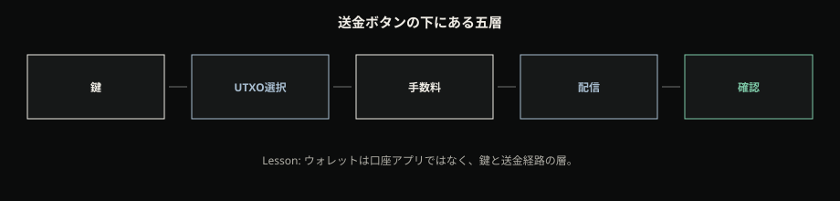
Simplified Payment Verification
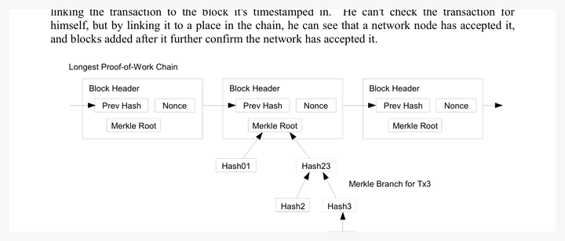
P5 の本回収はここだ。ウォレットを過信するとは、五層を一つの「完了」ボタンに畳み、画面の語彙を機構の語彙だと思い込むことである。軽いアプリがフル検証済みである、とも限らない——前節の薄い検証と交差する。「手数料待ち」は、しばしば相手の性格でもバグでもなく、空間入札で後回しになっている状態である。帰属を層に戻せば、怒りは減り、地図は残る。
シナリオ A — 「送った」ボタンと三つの食い違い
友人にカフェ代を送る。送金アプリは数秒で「送信済み」。友人側は「未確認」。別の店員ポリシーは「高額は6確認」。帰属を誤ると、「友人が意地悪」「システムが壊れている」「手数料を取られたのに動かない」になる。直し方は層である。「送信済み」＝鍵で署名し、配信したところまで。「未確認」＝まだ十分な累積作業がない（R3）。手数料を極端に低くすると、空間入札で後回しになり「待ち」が伸びる（P5）。相手の気分ではなく、経路のどこにいるかである。ボタン一つに五層が畳まれている。UI ラベルは層の名前ではない。
手数料は空間への入札
手数料を銀行の振込料と同じ語で呼ぶと、地図がずれる。振込料は、しばしば料金表と窓口の約束である。Bitcoin の基本形では、手数料は入力と出力の差として構造に現れ(*7)、マイナー（ブロックを組み立てる側）が限られたブロック空間にどの取引を載せるかの競争——空間への入札——として働く。混雑すれば、同じサイズでも高い入札が先に採択されやすい。空いていれば、低い入札でも入りやすい。金額の大小そのものより、単位空間あたりの入札の直感が一次近似として効く。
ここまでで足りる。RBF や CPFP の製品チューニング講座、手数料推定 API の操作手順、Lightning の手数料経路は本章に持ち込まない。読者が持ち帰るのは、「待ち」が性格診断ではなく、空間の混雑と入札の位置である、という一点だ。前章の確認時計と並べると、P3 は完走する。浅い確認で渡す／深く待つ、は再編成コストの話。手数料を低くして待つ／高くして急ぐ、は空間入札の話。どちらも「相手の気分」ではない。
同じ数字、違う権限 — カストディ帯
取引所アプリの「0.42 BTC」と、自己保管ウォレットの「0.42 BTC」は、画面上では同じ単位に見える。だが問うべきは数字ではなく、誰が署名できるかである。自己保管では、秘密鍵を持つ側が UTXO を支出できる——鍵権限である。カストディでは、しばしば会社が鍵を握り、利用者の画面残高は 会社への請求権（IOU） として読める。現代の貨幣が広く信頼された特別な IOU である、という制度入門の語彙は、ここでの対照の補助になる(*4)。優劣の判決でも投資助言でもない。語彙の整理である。画面の数字が同じでも、権限の層が違う（R2／P2）。
カストディ帯
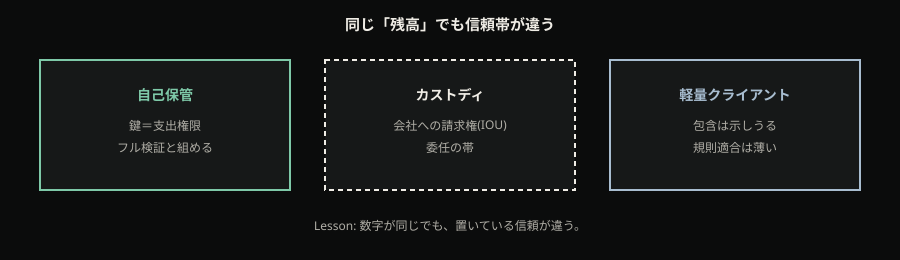
シナリオ B — 取引所の「0.42 BTC」と自己保管
同僚が取引所アプリの残高を「自分の Bitcoin」と呼ぶ。別の友人が「ウォレットに移した」と言うが、移先が取引所の別アカウントか、自分の鍵かを曖昧にする。章内の直し方は R2 である。画面の残高は、鍵権限（UTXO を支出できるか）か、会社への請求権か。出金して自己保管するか、委任を明示的に引き受けるか——どちらを選んでもよいが、選んだ帯が見えないまま「自分のもの」と呼ぶと、P2 の裂け目が残る。「ウォレットに移した」は、移先の鍵権限／カストディを確認するまで、主権回復としては未決である。
帯は道徳の序列ではない。カストディは便利と引き換えに委任する。自己保管は主権と引き換えに運用責任（鍵の保全）を引き受ける。軽量クライアントは、鍵を自分で持ちつつ検証を薄くすることもある。三つの帯——鍵の所在、検証の厚み、請求権か UTXO か——を混線させないことが、持ち帰りである。人生論の断定はしない。地図までである。
P1 と P2 を並べて閉じる。自己保管側の切れ目は鍵喪失。カストディ側の切れ目は請求権の不履行や出金停止。どちらも「残高が消える」に見えるが、切れる層が違う。フルノードで検証していても鍵を失えば支出できない。鍵を持っていても検証が薄ければ、規則適合の保証は他者に寄る。執行と保管は、別軸である。
持ち帰り: 今どこに信頼を置いているか
- 検証権力: 同一の合意規則で受理／拒否するのが執行である。フルノードはジェネシスから検証し、最多累積作業の有効鎖を真実とみなす(*11)。SPV は包含を示しうるが、埋め込み取引の規則適合は保証しない(*11)。
- ウォレット: 口座アプリではなく、鍵・選択・手数料・配信・確認の層である(*12)(*7)。ボタンのラベルは層の名前ではない（P5）。
- 手数料: 固定振込料ではなく、ブロック空間への入札である(*7)。待ちは性格診断ではない。
- 確認: UI の緑ではなく、確認累積／再編成コストの代理である（R3）。送信済み≠相手の確定。
- カストディ帯: 画面残高は鍵権限か会社への請求権かを先に分ける（R2／P2）。IOU 語彙は対照の補助であり、判決ではない。
- P1: 自己保管では鍵喪失＝支出権限の切れ目。手順百科ではなく、主権の層だけを固定する。
- R4: マイナー ≠ 立法者。執行は同一規則を走らせるノード側である。
誤解が芽生える場所で潰しておく。ウォレット＝銀行口座アプリ、ではない。取引所残高＝自己保管、ではない。送金＝ボタン一発で完了、ではない。手数料＝料金表の振込料、ではない。確認＝相手の気分、ではない。フルノードも SPV も同じ「検証」、ではない。軽いアプリ＝フル検証済み、ではない。「ウォレットに移した」＝主権回復、は移先を見るまで未決である。
必然の順をもう一度だけ言い直す。防衛の競争が見えたあと、受理／拒否を誰が行うかが要る。フル検証がその本丸であり、薄いモードは包含と規則適合を取り違えないための対照である。日常の送るボタンは、鍵・選択・手数料・配信・確認の五層に分解できる。手数料は空間入札、確認は累積作業の代理、画面残高は鍵か請求権か——この三つを取り違えなければ、P1／P2／P5 は入口の裂け目のまま残らない。読者が自分の言葉で、「今、検証の厚みはどこにあり、鍵は誰が持ち、数字は権限か請求権か」と言えるなら、本章の地図は再構築できた。
次の限界
送る経路——執行とウォレット層とカストディ帯——は地図になった。しかし 規則そのものが更新されるとき、何が起きるかはまだ空だ。互換的に厳しさを足す型か、永久に分岐しうる型か。アップグレードのニュースが「分裂の恐怖」としてだけ届くと、実例も政治劇に溺れる。
橋渡しは一文で足りる。送る経路は地図になった。では規則が変わる／分かれるとき、何が soft で何が hard か——更新の型が要る。 次章はその型差を渡す。
ソフトフォークとハードフォーク
前章までで、誰が合意規則を執行し、日常の「送る」がどの層に乗るかは見えた。フルノードは同一の consensus rules で受理／拒否し、ウォレットはその地図のどこかに乗る。だが規則そのものが 変わるとき——まだ古いソフトのまま動くノードと、新しい規則の鎖とのあいだで何が起きうるか——は空のままだった。ニュースが「アップデート」「フォーク」と書くたび、多くの読者はそこへ価格チャートや「どれが本物か」の陣営話を重ねる。本章の仕事は、その重ね方を止めることではない。分岐の型の地図を渡し、見出しの恐怖を型の問いに書き換えることだ。
入口の直感を先に名付ける。C1 で予告した「フォーク＝分裂の混乱」（P6）が、ここまで型のない不安のまま残っている。ソフトフォーク／ハードフォークという言葉が画面に出ると、ネットワークが二つに割れ、資産が消える、どれが本物か分からない——そう読む。本章は売買の安心材料を配らない。規則更新の型として、soft と hard を再構築する。SegWit（BIP141）は soft の設計実例としてだけ使う。フォーク戦争の百科、活性化年表のドラマ、価格効果——いずれも置かない。厚いのは定義と実例の必然であり、ドラマの分量ではない。
アップデート＝分裂、という恐怖
場面を置く。見出しが「重大アップデートで分裂の恐れ」と書く。読者の直感は P6 のままだ。ネットワークが割れ、どれが本物か、資産はどうなるか。ここでの誤りは、恐怖そのものではない。型を取らずに結末の物語へ跳ぶことだ。アップデート語を聞いたら、まず soft／hard のどちらなのかを問う——それが本章の判断規則（R5）である。善悪のラベルでも、勝敗表でもない。非アップグレードノードから見て、新しい規則のブロックがどう見えるかの型である。
本章が渡すのは安心の保証ではない。地図である。地図があれば、見出しの「分裂」が一時の物理か、合意規則の変更か、社会の物語かを仕分けできる。仕分けの本丸は本章。社会的見出し（闇・バブル・制度語）との最終分離は後章に残す。いま必要なのは、P6 の恐怖を否定せず、型を先に取る習慣へ降ろすことだ。
二つの「フォーク」を分ける
ここで危険な混同がある。C5 で見た一時フォークと、本章の soft／hard を同じ「分裂」として畳むことだ。一時フォークは伝播遅延の物理である。規則上どちらも妥当な二つの先端が短時間並び、最終は最多作業の有効鎖へ寄りうる。それは設計の欠陥というより、分散伝播の帰結だった。
本章の soft／hard は 合意規則そのものの変更に伴う分岐型である。別レイヤだ。混同すると、「いつも分裂している」か「アップデートは常に危機」になる。C5 の一時分岐図と、本章の対比図は、同じ「フォーク」語を共有しても、指している地形が違う。前者は物理の一時両立。後者は規則更新の互換関係。この層分離を一度明示しないと、P6 の恐怖は章の終わりまで生き残る。
C6 からの橋もここにある。フルノードは同一の合意規則で受理／拒否する。では規則を変えるとき、まだ古い規則のノードは、新しい鎖上のブロックをどう見るか——ここが型の分岐点である。執行の地図だけでは足りない。規則が動くときの、非アップグレードとの関係が要る。
硬く分かれる更新 — hard fork
Bitcoin Developer Guide の Blockchain 節は、合意規則の変更を soft／hard として整理する(*8)。hard fork は、新規則を非アップグレードノードが 拒否する型である。アップグレード側が受け入れるブロックを、旧規則のままのノードは無効とみなす。その結果、アップグレード側と非アップグレード側で鎖が分かれ、永久に分岐しうる(*8)。
抽象を一文で手触りにする。たとえばブロックサイズ上限を緩める変更を想像する。新規則で作られた「より大きい」ブロックは、旧規則ノードから見れば規則違反——拒否である。拒否された側と受理された側は、同じ親から先へ別の履歴を積みうる。これが hard の骨格だ。数値論争や派名は本章に入れない。必要なのは、「旧規則が新規則を拒否しうる」という関係だけである。
ここでの注意を二つ置く。第一に、hard＝常に悪意、ではない。動機の裁判はしない。型の記述は、非アップグレードとの互換関係までである。第二に、「どれが正規か」が社会や市場の語りにもなりうるが、本章は型の地図までで止める。陣営の勝敗表は書かない。永久分岐しうる、という可能性の型を固定すれば足りる(*8)。
厳しさを足す更新 — soft fork
soft fork は、対になる型である。アップグレード側がより 厳しい規則を執行し、非アップグレードノードも（旧規則のまま）アップグレード鎖上のブロックを 有効とみなしうる(*8)。読者向けの一言に畳むなら、互換的に厳しさを足しうる更新だ。
なぜ「有効とみなしうる」のか。新しい規則が、旧規則の許容集合の 部分集合になる方向——つまり、旧規則が許していたものの一部を新たに禁じる方向——なら、新規則に従ったブロックは、旧規則の検査だけを通すノードから見ても「規則違反」に見えないことがある。旧ノードは新しい厳しさを理解しない。だが理解しないことと、ブロックを拒否することは同じではない。旧規則の範囲では妥当に見えるなら、追従しうる(*8)。
Developer Guide はさらに、ハッシュレートの過半が新規則側にあれば、非アップグレードも強い鎖を追従しうる、と整理する(*8)。本章では活性化の投票劇や UASF／MASF の年表には入らない。活性化の仕方にも型がある、と一文で触れうる程度まで。本丸は互換関係である。soft だから「やさしい／安全」、hard だから「危険」——その道徳語は捨てる。互換の向きの話であり、善悪ラベルではない。
ここで hard_claim を読者の言葉で固定する。soft は互換的に厳しさを追加しうる型。hard は非アップグレードが新規則を拒否し、永久分岐しうる型。 どちらが「正しい政治」かではない。非アップグレードとの関係で何が起きうるかの型である(*8)。
もう一つ、誤読を潰す。soft fork なら全員がすぐ同じソフトを入れる必要がない、を「誰も検証しなくてよい」と読むのは誤りだ。執行はなおノードの規則である。互換型の話と、検証放棄は別層である——C6 の糸がここでも生きる。旧ノードが新鎖を有効とみなしうることは、新しい厳しさを執行しなくてよい、という意味ではない。アップグレード側が厳しさを執行している、という地図の話だ。
ソフトとハード
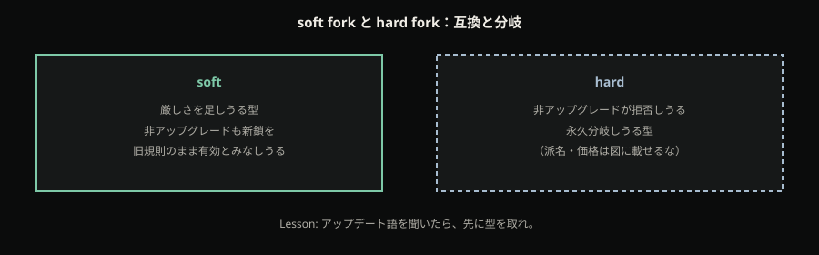
実例: SegWit は soft として設計された
定義だけだと抽象が残る。「厳しさを足す互換更新」が実際にどう設計されたかを、一つの仕様で示す。SegWit（Segregated Witness）は BIP141 として、witness（署名データ等）をトランザクションの別構造に置き、既存ブロックの merkle には coinbase 経由でコミットする——これにより soft fork 互換を狙う(*13)。
機構を必然の順だけで開く。従来、署名などの witness データはトランザクション本体に含まれ、txid の計算に影響しうる。SegWit は witness を分離し、既存の検証経路から見て古いノードが「知らないフィールド」として拒否しない形を取る。同時に、新しい規則を知るノードは、coinbase を通じて witness へのコミットを検証する(*13)。旧規則の検査だけを通すノードから見てもブロックが妥当に見えうる——だから soft の型に乗る。将来 hard fork で独立枝へ移す余地を残しつつ soft 互換を優先した、という BIP の設計意図は、仕様の選択肢として一文まで(*13)。年表ではない。
動機も一文で足りる。txid から署名を外すことで意図しない malleability を防ぎ、未確認トランザクションに依存する二次層を設計しやすくする——その方向の動機がある(*13)。Lightning の運用マニュアルにはしない。必要なのは、「なぜ soft として設計したか」の一点であり、製品手順ではない。
読者が持ち帰る一点を固定する。SegWit は「分裂事件の名前」でも「勝者の固有名」でもない。soft fork として合意規則を更新した設計の実例である(*13)。活性化日の年表、人物・企業・ハッシュレート戦争の再現、価格への影響——いずれも本章外。仕様の骨格（witness 分離 → coinbase コミット → soft 互換）までで止める。
見出しを型で仕分ける — R5
worked example を閉じる。見出し「重大アップデートで分裂の恐れ」が再び来る。直感はなお P6——ネットワークが割れ、どれが本物か／資産が消える——へ跳ぶ。章内の仕分けはこうだ。
まず問う（R5）。これは 規則を厳しくする互換更新（soft） か、旧ノードが新ブロックを拒否しうる更新（hard） か。soft なら「非アップグレードが旧規則のまま新鎖を有効とみなしうる」型がありうる——SegWit がその設計実例(*13)(*8)。hard なら永久分岐しうる型——「どれが正規か」は社会・市場の話にもなりうるが、本章は型の地図まで。陣営の勝敗は書かない。
成功条件は短い。読者が「アップデート＝常に分裂」ではなく、「soft／hard で分岐の仕方が違う；SegWit は soft の例」と一文で言えること。価格がどう動いたかは不要。P6 の mid-callback はここで完了する——恐怖を消すのではなく、型を先に取る習慣へ書き換える。社会的見出しとの最終分離は C9–C10 に残す。
R5 を規則文として一度だけ置く。アップデート語を聞いたら、ドラマや勝敗の前に soft／hard の型を取れ。 型が分かれば、一時フォーク（C5）との混同も、道徳語への滑りも、価格イベントへの還元も、一段手前で止まれる。止まれなければ、見出しの物語が機構の地図を上書きする。
持ち帰りと次の空白
章の核を三行に畳む。
- 層: 一時フォーク（伝播の物理）と、合意規則変更の soft／hard は別である。
- 型: soft＝互換的に厳しさを追加しうる／非アップグレードが新鎖を有効とみなしうる。hard＝非アップグレードが拒否し、永久分岐しうる(*8)。
- 実例と規則: SegWit（BIP141）は soft の設計実例(*13)。アップデート語では R5——型を先に取る（P6 の書き換え）。
更新の型は取れた。だが隣の名前の「暗号資産」が、契約の形・プライバシーの既定・発行体への償還のどれで違うのか——まだ空だ。Bitcoin の保証レイヤの地図があっても、性質の三軸がなければ「全部同じ」が戻る。次章はその比較を置く。
次の限界
規則更新の型（soft／hard）と、SegWit という soft 実例は見えた。しかし読者の残る問い——「他の暗号資産も同じでは？」——が未配置である。Ethereum（プログラマブル状態＋現行の合意様式）、Monero 系（既定プライバシー）、USDC 型（発行体償還）との性質差がないと、P7「全部同じ」が戻る。橋は一文で足りる。更新の型は手にある。隣の名前が何で違うのかは、まだない——それが次章の仕事だ。
他系との三つの違い
入口で約束した裂け目が、まだ残っている。署名・UTXO・伝播・PoW・ノード・fork の型まで通っても、市中の会話はすぐ「結局どれも同じブロックチェーンでしょ」「チャート見て強い方を持てばいい」へ滑る。隣の銘柄との差を、性質として置く前に 成績として読んでしまう——それが「全部同じ暗号資産」という入口の誤解だ。本章はその回収である。買い推奨ではない。アルトの百科でもない。時価総額の棚並べでもない。残すのは一つだけ——同じ語の下に、信頼の置き場が違う三つの性質が同居していること。成績の話は、性質の地図のあとで十分だ。
判断の物差しを先に言う。他の暗号資産と比べるとき、銘柄表に落ちないかを確認する。足りる軸は三つ——(1) 契約／プログラマブル状態と合意様式、(2) プライバシーの既定、(3) 発行体による償還——である。この三つで「何が違うか」を性質として置けたら、本章の仕事は足りる。価格の優劣や「どれを買うべきか」は、本章の外だ。前章までで soft／hard の型差は言えるようになった。だが「隣のチェーンも同じでは？」が未配置のままなら、これまでの機構説明は一銘柄のカタログに縮む。今、性質の座標を置くのは、社会の見出し（次章）の前に、プロトコル側の差を固定するためでもある。
先に物差し — 三軸
物差しを表の見出しとして先置きする。代表銘柄を先に並べると、読者の耳は「おすすめ一覧」へ切り替わる。順序を逆にする。
軸1: 契約＋合意様式。 同じ台帳に何を載せるか——電子現金の移転に絞るか、任意の状態遷移（プログラマブルな契約）まで載せるか。あわせて、現行の合意コストをどこに置くか——Bitcoin の PoW 連鎖か、Ethereum の現行 proof-of-stake か。載せるものの範囲と、合意の置き方は別の問いだが、同じ「チェーン」語の下でしばしば畳まれる。
軸2: プライバシー既定。 公開検証可能な履歴を、監査可能性として取るか。追跡困難を、電子現金の要件として取るか。どちらも「現金らしさ」を語りうるが、前提が割れる。
軸3: 発行体償還。 発行者なしで検証可能な供給制約を語るか。発行体が法定通貨へ 1:1 で償還すると主張する IOU を語るか。価値保存の語りが、ここでしばしば同じ棚に並ぶ。
物差しが先にあるから、あとの代表系は「勝者候補」ではなく、座標の例として読める。Intent が限定する代表は Ethereum／Monero（CryptoNote）系譜／USDC 型の二〜三系だけだ。全アルトを並べない。並べないことで、比較はカタログではなく物差しの演習になる。
載せるものの違い — プログラマブル状態と現行 PoS
Bitcoin 側の設計意図を、ここまで電子現金の合成として置いてきた。隣で大きく見える Ethereum は、その一般化として語られることが多い。Ethereum Whitepaper は、Bitcoin を裏付けも中央発行者もないデジタル資産の成功例として位置づけつつ、ブロックチェーンを分散合意の基盤として一般化する。狙いとして置くのは、Turing-complete な内蔵言語で任意の状態遷移——いわゆるスマートコントラクト——を書けるプラットフォームである。焦点は「通貨そのもの」から、プログラマブルな状態機械へ移る(*14)。
ここで読み替えを止める。プログラマブルであることと、Bitcoin が「未完成のプラットフォーム」であることとは、同じ命題ではない。Ethereum は一般化の設計意図を持つ。Bitcoin は電子現金に絞る設計意図を持つ。どちらが「本物のチェーン」かを本章は選ばない。選ぶのは軸だけだ——何を同じ台帳に載せるかが違う。
合意様式も、白書（2014）だけでは現行を語れない。ethereum.org の PoS ドキュメントは、Ethereum が 2022 に PoW から proof-of-stake へ切り替えたと述べる。バリデータが ETH をステークし、不正時にはステークが破壊されうる——合意コストの置き方が、Bitcoin の PoW 連鎖とは異なりうる(*15)。本章はエネルギー道徳の戦争を開かない。必要なのは短い一点だけだ。契約の一般化と現行合意様式は、どちらも第1軸の部品であり、片方だけでは「Eth＝Bitcoin の上位互換」や「Eth＝ただの別コイン」へ滑る。DeFi の地図、ガス最適化、L2 の教程は出さない。比較軸として、プログラマブル状態＋現行 PoS までで止める。
hard_claim の第一文をここで固定する。Ethereum ＝ プログラマブル状態（＋現行 PoS）。 Bitcoin 側の対比語は、電子現金に絞る設計意図と、PoW 履歴による合意——優劣ではなく座標である。同じ「ブロックチェーン」語が、電子現金の合成と、任意契約のプラットフォームを、一つの棚に見せてしまう。軸1は、その棚を二つに割るための物差しだ。
見えることの違い — 公開監査と既定プライバシー
第2軸は、履歴が「見えること」をどう取るかだ。Bitcoin の公開台帳は、参加者が同じ規則で検証できる監査可能性を優先する。同じ公開性は、追跡可能性とも裏表になりうる。CryptoNote は、Bitcoin の主な欠点の一つとして取引の追跡可能性を挙げる。理想的電子現金の要件として untraceability／unlinkability を置き、リング署名やワンタイムアドレスなどで送信者の曖昧性・受信者の匿名性を目指す(*16)。Monero 系譜が借りる基盤の一つがここにある。
読者向けの命題は狭い。既定で追跡困難を狙う設計意図が、公開履歴の監査可能性優先と、性質として割れる——それだけだ。「完全匿名」と断定しない。運用ガイドも、規制回避の手順も置かない。CryptoNote の批判を一次として開くが、Bitcoin を「欠点だけ」へ還元もしない。監査可能性を取る設計と、既定プライバシーを取る設計は、どちらも電子現金の語りに触れうる。記事の stance は present_as_open——勝者を決めず、割れを隠さない。開くことと、どちらを推奨することとは別である。
hard_claim の第二文。Monero 系＝既定プライバシー（追跡困難を狙う設計意図）。 Bitcoin 側の対比語は、公開履歴の監査可能性——ここも成績ではなく性質である。
誰が償還するか — 発行者なしと発行体 IOU
第3軸は、価値保存の語りが割れやすい地点だ。C3 で予告した糸——検証可能な希少としての候補性質と、発行体の 1:1 償還——を、ここで対照する。Circle は、USDC が常に 1:1 で米ドルへ償還可能だと主張する。準備は現金・短期債等で完全裏付けされ、運営資金と分離して保有されると説明し、開示と第三者 attestation を透明性の中核に置く(*17)。信頼の置き場は、プロトコル内の供給規則だけでは閉じない。発行体の信用と、準備・規制枠組みに依存する。
ここで IOU の相手を取り違えない。取引所残高の IOU（カストディ）と、ステーブルコイン発行体の償還 IOUは、どちらも請求権だが相手が違う。前者は取引所への預け、後者は発行体が主張するドル償還だ。本章は前者を深追いしない。必要なのは、USDC 型が「ドルそのもの」ではなく、発行体償還の請求権として読めることだ。準備が「絶対安全」とも断定しない。自己説明と attestation に依存する、と明記する。Bitcoin 推奨にもステーブル推奨にもしない。
hard_claim の第三文。USDC 型＝発行体償還（1:1 IOU）。 Bitcoin 側の対比語は、発行者なしの検証可能な供給制約——SoV は到達側面・候補性質として C3 のまま残し、ここでも「だから買え」には戻さない。SoV の語りの割れ自体も present_as_open——希少の検証と発行体償還のどちらが「正しい価値保存」かを、本章は選ばない。同じ棚に並ぶ「価値保存コイン」語は、しばしばこの割れを隠す。軸3は、その隠しをほどくための物差しだ。
三軸で固定する — ランキングではない
三つの命題を並べ直す。Eth＝プログラマブル状態（＋現行 PoS）(*14)(*15)。Monero 系＝既定プライバシー(*16)。USDC 型＝発行体償還(*17)。Bitcoin は、それぞれ電子現金焦点＋PoW、公開監査、発行者なし——として座標に載る。同じ「暗号資産」語は、三つの信頼モデルを隠したまま同居しうる。銘柄を増やさなくても、差は性質として置ける。これが P7 の本回収の骨である。座標が先、成績は外。ランキングは置かない。性質だけ残す——それだけ。
三つの対照軸
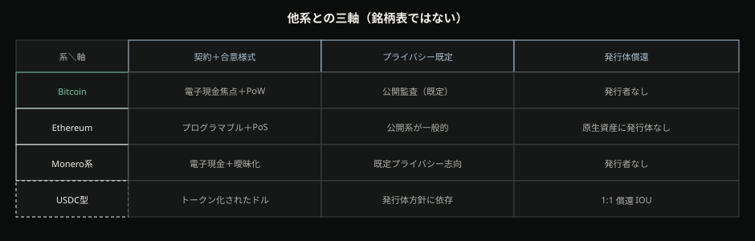
| 契約＋合意様式 | プライバシー既定 | 発行体償還 | |
|---|---|---|---|
| Bitcoin | 電子現金に絞る設計意図＋PoW 履歴 | 公開履歴の監査可能性 | 発行者なし（検証可能な供給制約） |
| Ethereum | プログラマブル状態＋現行 PoS | 公開系の既定（監査可能性寄り） | 発行者なしのネイティブ資産だがプラットフォーム |
| Monero 系譜 | 電子現金志向＋既定プライバシー設計 | 既定で追跡困難を狙う | 発行者なし（プライバシー軸が主） |
| USDC 型 | トークン化されたドル請求権（チェーン上の表現） | 発行体・開示の枠に依存 | 発行体 1:1 償還 IOU |
セルは性質語のみ。価格列も、時価総額列も、「安全性スコア」もない。矢印で優劣を付けない。Bitcoin を王冠で勝者化しない。読者が表から持ち帰るのは順位ではなく、どの軸で信頼を置いているかである。表を「トップの四銘柄」と読み替えた瞬間、本章は失敗する。行は代表系であり、列は性質であり、セルは成績ではない。
開いたままの割れ — 三つ
表が固定しても、記事は勝者銘柄を決めない。割れを三つ、開いたまま置く。
プライバシー既定。 公開台帳の監査可能性を取るか、追跡を欠点として既定プライバシーを取るか(*16)。どちらが「本物の電子現金」かを選ばせない。性質差として見えることだけを残す。
プラットフォーム一般化。 電子現金に絞るか、任意状態遷移へ一般化するか(*14)。「どちらが本物のチェーンか」は禁止。設計意図の差として読む。現行合意が PoS でも(*15)、それは第1軸の合意様式の話であり、道徳のエネルギー戦争ではない。
SoV の語り。 検証可能な希少（到達側面）か、発行体 1:1 償還か(*17)。C3 の予告をここで厚く対照するが、Bitcoin＝最善の価値保存、とも、ステーブル＝最善、ともしない。同じ「価値保存」語の下に、信頼モデルが違う。
present_as_open は「どちらでもよい相対主義」ではない。割れを隠さず、記事が選ぶのは軸で見ることであり、勝者銘柄ではない。SNS の場面に戻す。「結局どれも同じ。チャートで強い方を持て」と言われたら、差は軸1か2か3か、そして「強い」が性質か相場成績かを聞く。成績は本章の外だ。「匿名コインの方が本物」「ステーブルの方が価値保存」と言われたら、公開監査・既定プライバシー・発行体償還のどれを前提にしているかを言えるか——成功条件はそこにある。銘柄名を増やさなくてもよい。必要なのは、同じ語の下に異なる信頼モデルが同居している、と自分の言葉で言えることだ。
差は置けた — 見出しの話は次
性質差——契約＋合意様式／プライバシー既定／発行体償還——は置けた。P7「全部同じ」は、三軸と hard_claim で mid-callback として回収できる。最終の立ち位置一文は、まだ先（記事末）へ残す。今の持ち帰りは順位表ではなく、信頼の置き場が違うという一文で足りる。
だが読者の残る感覚は別だ。闇・バブル・「機関が認めた」といった見出しが変わると、プロトコルの中身まで変わったように見える。ETF の話や承認声明が、三軸の性質差を溶かし、「全部が同じように正当化された」へ戻す力を持つ。Eth も BTC も「同じ機関化」に聞こえる瞬間、性質の座標は再び成績と見出しの棚に戻る。本章はそこまで回収しない。次に必要なのは、社会の見出し変化を、プロトコルが言いうる保証レイヤと、物語・制度レイヤに分けて読む枠である。法令手順の百科も、価格史も、買い推奨も、そこでも禁止だ。性質で「何が違うか」は置いた——次は、見出しがプロトコルを変えたように見える話へ渡す。
次の限界
性質差は置けた。だが見出しが変わるとプロトコルも変わったように感じる裂け目が残る。次章で保証レイヤと物語・制度レイヤを分ける。
社会からの見られ方
前章までで、誕生動機・機構・フォークの型・他系との三軸は歩いた。「全部同じ暗号資産」は性質差として降ろせる。それでもニュースや会話が来るたびに、別の錯覚が戻る。見出しがプロトコルを別物にした、と感じやすいのだ。闇市場の語り、バブルの語り、ETF と機関化の語り——温度は違うのに、どれも「Bitcoin そのものが変わった／公認された／終わった」という一文に溶けやすい。見られ方の変化と、保証の変化が、同じ語で混ざる。
本章は機構の続きではない。見出しの位相を、保証レイヤと物語・制度レイヤに分けて読む framing の章である。どのブランドが正しいか、どの年が本質だったか、という社会史の断定年表にはしない。法令の手順書にも、価格の百科にもしない。仕事は一つだけだ——見出しの変化 ≠ 保証の変化、という問いを立て、現状を二つの時計で読めるようにする。
闇・バブル・ETF——見出しが「別物になった」と感じさせるとき
読者がすでに浴びている見られ方を、三つのラベルで名付ける。一つは「闇」——違法取引や匿名の逃げ場、という語り。一つは「バブル」——熱狂と投機、価格の物語が前面に出る語り。一つは「ETF／機関化」——証券枠や大口の窓口が開いた、という語り。これらは読者の入場状態であり、本章が選ぶ正解ではない。どのラベルが本質か、を決める博物館にもしない。
友人／SNS の会話を想像してよい。「ETF が承認されたから、もう国に認められた正式な資産だ。プロトコルも安全お墨付き」と言う人と、「前は闇、今はバブルが機関の皮を被っただけ」と言う人が並ぶ。同じニュースを見て、逆の物語が出る。どちらも温度は高い。どちらも、保証——署名・未使用・伝播と検証が支える発行・履歴・受理／拒否——がどう変わったか、という問いを飛ばしやすい。
本章が拒否するのは、その飛ばしである。見出しの位相が動いたことと、規則と検証可能性が動いたことを、同じ「変わった」で畳まない。ラベル競争は物語の側にあることが多い。保証の問いは、別時計で立てる。
二つの時計——保証レイヤと物語・制度レイヤ
ここから、用語を固定する。
保証レイヤは、プロトコルが公開に検証可能な形で支えるものの側である。署名による許可、未使用出力の消費、伝播と作業証明、ノードによる規則適合の受理／拒否——前章までで歩いた地図だ。ここが変わったかを問うなら、問いの形は狭い。発行・履歴・規則執行の検証可能性と、合意規則そのものが変わったか。見出しの温度では測らない。
物語・制度レイヤは、社会が何と呼ぶか、誰がどんな枠で触れるか、貨幣史のなかでどの錨が語られるか、の側である。メディアのラベル、証券市場の開示と取引所規制の枠、兌換史や機関の語りがここに入る。ここが動くと、人々の語彙と窓口は確かに変わる。だが、その変化は、保証レイヤの変更証明ではない。
二つの時計が同じ針を指すとは限らない。物語が先に熱くなり、保証は静かなままでありうる。逆に、規則や検証の話が動いても、見出しが別の語で騒ぐこともある。現状を読む作法は、混同をほどくこと——どちらの時計の話かを先に名指すことだ。価値保存の語りで候補性質と購買力を分けたのと隣接するが、同一ではない。あちらは SoV 言説の分離、こちらは社会見出しの分離である。混線させない。
保証と物語
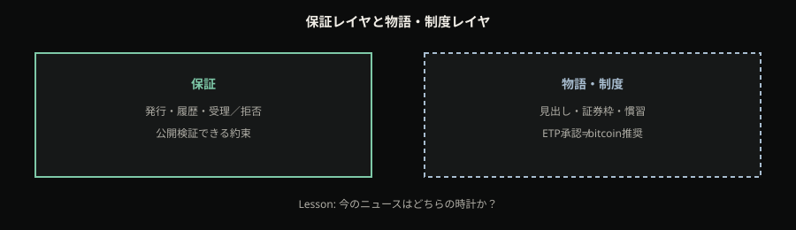
図の左と右を、年表ストライプや価格の線で結ばない。結ぶと、断定年表と価格百科が戻る。闇／バブル／機関を三色のストーリーボードとして「唯一の真実」に固定するのも、同じ罠だ。使うならラベル例にすぎない、と断る。問うのは順序だけだ——いまの見出しは、規則と検証可能性の話か、語りと制度枠の話か。
前章の三軸（プログラマブル状態、既定プライバシー、発行体償還）は性質の地図だった。本章の二層は、その地図の上に載る社会位相の読み方である。「同じ見出しで一枚岩に見える」錯覚が戻ったら、性質軸へ戻す糸は前章にある。本章は、見出しそのものを保証と誤帰属しないための楔を打つ。
錨が動いた先例——1971 を物語レイヤの背景として
物語・制度レイヤが、物理やプロトコルの保証とは別時計で動く——その背景補助として、制度史の断面を一つだけ借りる。二次世界大戦後のブレトン・ウッズ体制下では、多くの通貨がドルに結ばれ、ドルは金一オンス＝35ドルという比率で金と結ばれていた。1971年8月15日、国際収支の圧力やインフレ、金の取り付け懸念などの背景のなかで、ドルの金兌換窓口が閉じられる。連邦準備制度史は、これにより国際通貨体制が実質的にフィアット（不換）へ転じ、ブレトン・ウッズの終わりの始まりになった、と要約する (*5)。
本章での使い方は、価値保存章での繰り返しではない。ここで取りたい命題は、SoV の候補性質でも購買力でもない。貨幣をめぐる見られ方と制度の物語は、商品の物理制約や、公開プロトコルの検証保証とは、別の時計で動きうる、という一点だけだ。錨の置き場——何が「最終の語り」として語られるか——が制度史のうえで移った、という背景補助である。
悪役の物語にしない。法定通貨が壊れたから次が必然だ、とも言わない。Bitcoin の価格史や投資結論にも使わない。「だから Bitcoin」への因果直結は、本章の禁止である。先例が示すのは、物語・制度の針が動いても、それは別層の出来事として読める、という作法の補助だけだ。
機関化の一例——spot ETP 承認声明；推奨ではない
制度レイヤの landmark を、一つだけ adapt する。2024年1月10日、SEC 議長の声明は、複数の spot bitcoin ETP の上場および取引を承認した、と述べる (*18)。取る命題は狭い。承認は、証券取引所法（Exchange Act）の整合性の評価に関わり、証券市場における開示と取引の枠を伴う制度位相である。投資家が既に複数の経路でエクスポージャを得られうる、という文脈はあるが、本章は投資経路の案内にしない。銘柄比較も、手数料の講座も、買い／売りの助言も置かない。
楔は声明そのものにある。議長はこう述べる——While we approved the listing and trading of certain spot bitcoin ETP shares today, we did not approve or endorse bitcoin. （本日、特定のスポット bitcoin ETP 株式の上場および取引を承認したが、bitcoin 自体を承認または支持したわけではない）(*18)。
ここを一文で潰さない。「SEC が Bitcoin を認めた」「プロトコルがお墨付きになった」と要約すると、声明が明示した否定が消える。動かしたのは、証券市場の上場・取引・開示という制度枠（物語・制度レイヤ）である。動かしていないのは、bitcoin 自体の推奨・支持であり、承認声明だけでは、発行・履歴・検証規則の保証レイヤが変わったとも言えない。機関化は、触れる窓口と開示枠の話であり、合意規則の立法ではない——マイナーが立法者でないことの、社会語り版に近い取り違えを避けるための注意だ。
友人の「正式な資産になった／安全お墨付き」を仕分けるなら、三つの命題に割れば足りる。(1) 制度枠が動いたか——動いた、という読みは声明の範囲で可能だ。(2) bitcoin が推奨・支持されたか——声明は否定する。(3) 保証レイヤが変わったか——承認声明だけでは、そう言えない。ラベルの「闇／バブル／正式」競争は、主に物語の側にある。保証の問いは、規則と検証可能性の側に残る。成功条件は短い——「制度枠の変化」「プロトコル保証の変化」「推奨」を一文で分離でき、見出しの温度で機構地図を捨てなくてよい、と言えることだ。
分けて読む、という現状の作法
社会からの見られ方の変化は、保証レイヤと物語・制度レイヤに分けて読め。機関化の一例として、spot ETP 承認声明を置く——それは制度枠の landmark であり、プロトコル保証の変更証明でも、bitcoin の推奨・支持でもない。
現状の読み方は、チェック三問で足りる。任意の見出しに対し、(a) 規則と検証可能性が変わったか（保証）→ (b) 誰が・どの制度枠で・どんな語りで触れているか（物語・制度）→ (c) 二つを混同していないか。温度が高いほど、(c) が先に崩れる。(a) を飛ばして (b) の語りだけで「別物になった」と結論しない。逆に、(b) を「無関係だ」と虚無に捨てる必要もない。分けて読むのであって、制度を無視する許可ではない。
フォーク＝分裂、という社会語りが再燃したときも、同じ作法でよい。まず型の話か（規則更新の soft／hard）、物語の恐怖か、を分ける。型の本論は前章にあり、社会見出しとの最終回収は次章側に残る——本章では、層を取り違えない、という一文の接続で足りる。マイニングを「浪費／支配」と読む見出しが来たときも、それはしばしば物語レイヤのラベルである。機構の地図を捨てる理由にはならない。
本章は「正しい世論」を選ばない。闇・バブル・機関のどれかが本質だ、と断定年表に固定しない。法令適合の手順、各国規制の百科、コンプライアンスの how-to、価格の年代記、投資助言——いずれも範囲外である。仕事は、見出しの温度で機構地図を捨てなくてよい、という安心を渡すことだ。
目指す世界・限界・立ち位置は次へ
層は分けられた。だが空洞が残る。分けて読めた——で、何を目指す世界として設計されたのか。何を解かず、何をよく誤解されるのか。自分は鍵・台帳・確認・委任のどこに立つのか。スローガンとしての「自由」や「検閲耐性」だけが残ると、地図はまた空転する。社会位相の読み方があっても、設計の上限と自分の立ち位置が未結晶なら、見出しの次の波でまた飲み込まれる。
次章は、層を分けた現状認識を持ったまま、白書の目指す世界と限界の表、よくある取り違えの回収、人生の配置——どこを自分で引き受け、どこを委任し、何を期待しないか——へ進む。人生論の断定はしない。保証と物語を分けたあとに初めて、「何を目指し、どこに立つか」が空転しにくくなる。見出しの位相は読めた。残るのは、設計の上限と、自分の立ち位置である——それが C10 への橋だ。
目指す世界・限界・立ち位置
これまでの章で、裂け目の手触りから機構の地図、規則の更新型、隣の系との性質差、社会の見出しの読み分けまでを辿った。部品は揃っている。それでも会話の出口が「Bitcoin は自由だ」「検閲耐性だ」「デジタルゴールドだ」だけだと、地図はスローガンに溶ける。自由が何を保証し、何を引き受けないのかが言えない。自分が鍵・台帳・確認・委任のどこに立っているかも言えない。地図があっても、境界と配置が空なら、記事は閉じていない。
本章は新しい機構を足さない。目指す世界と解かない問題を裏表として一枚に置き、日常の七つの裂け目を立ち位置の言葉へ戻し、記事全体の判断規則を薄い持ち帰り地図に圧縮する。予言もしない。人生の正解も断定しない。今買う／売るの助言もしない。言える境界と、言える立ち位置——それで記事は終わる。入口のスローガンを、出口の一文に置き換える作業である。
「限界があるなら何も信じられない」へ滑る必要はない。限界は失敗宣告ではなく、射程の宣言である。射程が言えて初めて、自分の配置を一文にできる。チェックリストを増やして安心を買う必要もない。必要なのは、境界を言えることと、立ち位置を言えること——その二つだ。
目指す世界 — 信頼最小化の電子現金
目指す世界を、白書の問題設定に戻す。オンラインで、信頼できる第三者なしに、当事者同士で直接送れる peer-to-peer の電子現金——仲介なしに二重支払いを防ぐ共有履歴と署名の合成である(*1)。解放の物語でも、価格の約束でもない。設計目標の言い直しだ。
信頼最小化とは、「誰も信じなくてよい」という万能の免罪ではない。信頼できる第三者に決済の最終裁定を置かない、という問題設定である。署名で誰が許可したかを示し、未使用の出力の集合で何がまだ使えるかを示し、作業の積まれた鎖でどの履歴が正規かを示し、同じ規則で検証する参加者が受理／拒否を執行する。その合成が、本章で言う目指す世界の骨格だ(*1)。
ここで固定したいのは、目標の狭さである。狭さは欠陥ではなく、設計の選択だ。電子現金として二重支払いを閉じる合成に絞るから、仲介なしの送金という問題設定が保てる。目標が膨らんで「あらゆる金融契約」「あらゆる決済規模」「既定の強い匿名」まで含むと聞こえた瞬間、白書の問題設定から離れている(*1)。
前章で分けた保証レイヤと物語・制度レイヤを、ここでも一度だけ想起する。機関の見出しや商品化の位相が動いても、プロトコルが保証する許可・未使用・正規履歴・執行の形が自動で書き換わるわけではない。目指す世界は、その保証の側の設計目標である。物語の側の「自由」や「次の金融 OS」と混線させない。
解かない問題は裏表 — 限界表
一つの設計目標を選ぶことは、別の目標を解かないと決めることでもある。万能・既定匿名・無限スケールは、白書の中核問題設定とは別軸だ。欠点カタログにして設計を無効化するのではなく、射程外／別設計の仕事として置く。
| 解かない／射程外 | 読者向け一行 |
|---|---|
| 万能金融・任意契約の本鎖完結 | 目指すのは電子現金の合成；一般状態機械化は別軸 |
| 既定の強い匿名性 | 公開台帳は監査と追跡が裏表；既定の追跡困難は解かない |
| 無限スケール（本鎖のみ） | 本鎖のスループットには天井；空間は入札される |
万能金融ではない。 任意の金融契約を本鎖だけで全部やる——プログラマブルな一般状態機械としてのプラットフォーム化——は、比較章で触れた別系の仕事である。Bitcoin 本鎖は電子現金の合成に絞る。隣の系が契約空間を広げることと、Bitcoin が白書目標を捨てて万能化したこととは別話だ。「次の金融 OS」という見出しは、限界表の万能行に当てて返す。
既定匿名ではない。 公開台帳は、誰でも履歴を追える監査可能性と、追跡可能性が裏表になる。既定で強い untraceability を性質にするのは、別設計の軸である（次節で開く）。「匿名通貨」という見出しだけで Bitcoin を読むのは、限界表の取り違えだ。
無限スケールではない。 本鎖のスループットには天井がある。ブロック空間は入札され、全員の全決済を本鎖だけに無限に載せる約束ではない。安い即時決済を本鎖だけで無限に約束する読みは、限界表の外だ。天井の先に別レイヤの仕事がありうる、という注記まで——チャネル管理や手数料経路・流動性の手順は本章の範囲外だ。
エネルギー量の社会的妥当性も、解かない問題の側に触れるなら、ここまでとする。公開履歴を守る追記にはコストがかかる——防衛の役割コストである。Cambridge の CBECI は、その規模感を眺める公開推定枠であり、方法論付きの推定源であって、道徳や政策の最終裁判所ではない(*10)。特定の TWh を永遠の定数にせず、善悪の判決もしない。
限界は「だから無価値」ではない。目指す世界をはっきりさせた結果として、引き受けない仕事が見える。スローガンの自由が膨らんで万能に聞こえるとき、限界表に戻る。裏表として置けるなら、地図は無効化されない。
プライバシー既定は開いたまま
CryptoNote 系譜は、Bitcoin の主な欠点の一つとして取引の追跡可能性を名指し、理想的な電子現金の要件として untraceability と unlinkability を置く(*16)。公開監査を優先する設計と、既定で追跡困難を狙う設計は、性質として割れる。
この割れを、本章は勝ち負けにしない。Bitcoin を「欠点だけの失敗作」に還元しない。逆に、「公開だから十分に匿名だ」とも言わない。既定の強いプライバシーは、白書目標の中核としては解かない——別設計の軸であり、規範的な決着は記事の外に開いたまま残す(*16)。監査可能性を選んだ帰結と、追跡を欠点と名指す批判は、同じ棚で偽合意させない。ニュースが「匿名通貨」と一括するとき、限界表の「既定匿名は解かない」と、この open な対照の両方を返す。
四軸 — 鍵・台帳・確認・委任
立ち位置を語るための四軸を、読者語で固定する。
- 鍵: 誰が支出を許可できるか。秘密鍵やシードの置き場所。失えば許可者が消える。
- 台帳: どの履歴・未使用状態を正規と見るか。自分で検証する厚みか、薄い／委任された視点か。
- 確認: 「確定」を何の時計で測るか。UI の反映か、確認累積／再編成コストか。相手のリスク許容に合わせた待ち方。
- 委任: 画面の「残高」が鍵権限か、会社への請求権（IOU）か。カストディ帯を引き受けるか、自己保管か。
この四軸は道徳の梯子ではない。配置の言葉だ。自己保管だけが正しく、委任は堕落だ、とは言わない。厚い検証だけが正しく、薄い視点は無意味だ、とも言わない。どこに信頼を置き、どこを自分で持つか——その配置が言えることが出口である。
四軸は独立にも動く。鍵は自分でも、台帳検証は薄いことがある。確認は深く待っても、残高は請求権のまま、ということもある。一つの正解パッケージではなく、組み合わせとして読む。
七つの裂け目を立ち位置に戻す
記事の入口で約束した日常の裂け目を、立ち位置の言葉で総回収する。現象はバラバラの失敗談や相場談ではなく、自分がどこに立っているかを問う入口だった。
| 現象 | 主に落ちる軸 | いまどう見るか（立ち位置の言葉） |
|---|---|---|
| シードを失うと誰のものにもならない | 鍵 | 許可者が消えた。相場でも詐欺でもなく、主権の置き場所の話 |
| 取引所の「残高」は IOU になりうる | 委任（＋鍵） | 画面数字＝会社への請求権か、自分の鍵権限か。先に分ける |
| 「反映済み」と「何確認」が食い違う | 確認 | UI の緑と、累積作業／再編成コストの時計は別。相手の方針に言語化する |
| マイニング＝浪費／支配に聞こえる | 台帳（防衛の読み方） | 計算供給の勧誘であり立法ではない。エネルギーは役割コストまで(*10) |
| ウォレット過信・手数料待ち | 鍵＋確認（＋委任） | ウォレットは鍵・選択・手数料・確認の層。製品マニュアルではなく層の地図 |
| フォーク＝分裂の混乱に見える | 台帳（規則更新の型） | 先に soft／hard の型を取る。見出しの政治劇に溺れない |
| 「全部同じ暗号資産」に聞こえる | 四軸の 外側の性質比較 | Eth／プライバシー既定／発行体償還の三軸。銘柄ランキングに落ちない |
シード紛失は、価格の話でも被害者意識の話でもなく、鍵軸——許可者の消滅——である。取引所の画面数字は、先に委任軸で切る。請求権なのか鍵権限なのかを分けないまま「自分のもの」と言うと、立ち位置が溶ける。
反映と確認の食い違いは、確認軸の時計の差だ。相手が浅い確認で賭け、自分が深い確認を買うなら、交渉はまだ終わっていない——終わっているのは局所の観測だけだ。マイニングの浪費／支配物語は、台帳防衛の読み方へ戻す。計算供給と規則執行は別であり、エネルギーに触れるなら役割まで——推定枠は判決ではない(*10)。
ウォレットは「便利な金庫アプリ」ではなく、鍵・選択・手数料・確認（と、しばしば委任）が同居する層の地図である。製品のボタンを覚えることと、層を言語化することは別だ。アップデート見出しは、先に規則更新の型を取る——分裂の政治劇に溺れる前に、soft／hard の型差を置く。全部同じに聞こえる棚は、立ち位置を語る前に性質差の地図を持つことへの回収だ——万能金融や既定匿名が隣の軸であることとも接続する。銘柄の並び替えではなく、性質の三軸である。
持ち帰り判断地図
記事全体で使ってきた判断規則を、再講義せず一行に圧縮する。芯は層を問うこと、残高の中身、確認の時計、立法と執行の分離である。残りは表で触れるだけで足りる。
| # | 規則（一行） | 立ち位置へのフック |
|---|---|---|
| R1 | 「ブロックチェーンがある」で止まらず、許可・未使用・正規履歴・執行のどれかを問う | 四軸のどの層の話かを先に取る |
| R2 | 画面の「残高」は鍵権限か会社への請求権かを分ける | 委任軸 |
| R3 | 「確定」は確認累積／再編成コストで見る | 確認軸 |
| R4 | マイナーを立法者と読まない；執行はノード側 | 台帳防衛 ≠ 規則制定 |
| R5 | アップデート語は soft／hard の型を先に取る | 台帳の規則更新 |
| R6 | 他系比較は三軸で足りるか確認し、銘柄表に落ちない | 性質差；限界表の万能／匿名と接続 |
| R7 | SoV 言説ではプロトコル保証と市場結果を分離する | 価格＝正しさ、と読まない |
| R8 | 社会の見出しを、保証変更と物語・制度変更に分ける | スローガンに飲まれない |
見出しが「自由」「匿名」「次の金融 OS」「エネルギー浪費」のどれで来ても、まず限界表か R1–R4 に戻れるかが持ち帰りだ。価格が上がったからプロトコルが正しくなった、とも読まない（R7）。機関化したから保証が変わった、とも読まない（R8）。薄い地図で足りる——各規則を再び講義し直す必要はない。
自分はどこに立つか — 一文
友人や同僚が「Bitcoin は自由だ」と言う。スローガンだけ返すか、「だから自己保管しろ／触るな」と人生論に飛ぶか——その二択を避ける。まず目指す世界を信頼最小化の電子現金に戻し(*1)、限界表で万能・既定匿名・無限スケールは解かないと言う。プライバシー既定の割れは開いたまま残す(*16)。そのうえで、自分の配置を一文にする。
実作業（正解なし）:
- いま日常で触れている画面を一つ選ぶ（取引所／カストディ／自己保管ウォレットなど）。
- 鍵 — 支出を許可できるのは自分か、会社か、不明か。
- 台帳 — 正規履歴を自分でどこまで検証しているか（しない／薄い／厚い）。
- 確認 — 「届いた」と判断する時計は UI か、何確認か、相手任せか。
- 委任 — 残高は請求権か鍵権限か。引き受けているリスクを一言で。
- 上を 一文 に圧縮する（例の丸写しではなく、自分の状況で書く）。
例の骨格だけ示す——どちらが道徳的に正しいかは裁定しない。
- 「いま私は取引所の請求権（委任）に立ち、確認はアプリの反映に任せ、鍵も台帳検証も自分の外にある。」
- 「鍵は自分で持ち、確認は相手の方針に合わせ、台帳検証は軽いクライアントに委任している。」
禁止は明確だ。「だから自己保管せよ」「だから触るな」「こう生きよ」。投資として今どうすべきかも、本章の外だ。言えた一文が、スローガンの代わりになる。正しさの裁定ではなく、配置の言語化である。
ニュースが「匿名通貨／エネルギー浪費／次の金融 OS」と読むときも同じ手順だ。既定匿名は別設計の軸であり open(*16)。エネルギーは役割コストまで(*10)。万能金融は本鎖の目標外。限界表で返し、自分の四軸を一文に載せる。
記事の出口／持ち帰り
Bitcoin を「必ず上がる資産」ではなく、署名（誰が許可）・UTXO（何が未使用）・PoW 連鎖（どの履歴が正規）・フルノード検証（誰が規則を執行）で二重支払いを防ぐ信頼最小化の電子現金と見なし、ウォレット／カストディ・確認深度・fork 型・他系との違いを層ごとに信頼の置き方を変える判断器として使う。
目指す世界は信頼最小化の電子現金だった(*1)。万能金融・既定匿名・無限スケールは解かない。プライバシー既定の規範的割れは開いたまま残る(*16)。エネルギー量の社会判決も、触れても役割までだ(*10)。価格の最適解も、幸福の処方も、技術地図の外にある。持ち帰れるのは、境界の表と、立ち位置の一文である。
開かれたまま残すものを、虚無にしない。言えないことを言えないと置けること自体が、地図の仕事だ。人生コーチの絶対言明も、解放の予言も、ここに置かない。チェックリスト地獄で閉じるのでもなく、全部限界だから信じられない、で地図を捨てるのでもない。
目指す世界と解かない問題は裏表だった。鍵・台帳・確認・委任——自分はどこに立つかを一文で言えるなら、記事はここで終わる。
持ち帰るメンタルモデル
一文の芯
Bitcoin を「必ず上がる資産」ではなく、署名（誰が許可）・UTXO（何が未使用）・PoW 連鎖（どの履歴が正規）・フルノード検証（誰が規則を執行）で二重支払いを防ぐ信頼最小化の電子現金と見なし、ウォレット／カストディ・確認深度・fork 型・他系との違いを層ごとに信頼の置き方を変える判断器として使う。
判断規則
- 「ブロックチェーンがある」で止まらず、許可・未使用・正規履歴・執行のどれかを問う。
- 画面の「残高」は鍵権限か会社への請求権かを先に分ける。
- 「確定」は感覚ではなく確認累積／再編成コストで見る。
- マイナーを立法者と読まない；規則執行はノード側。
- アップデート語を聞いたら soft／hard の型を先に取る。
- 「他の暗号資産」比較は Eth／プライバシー既定／発行体償還の軸で足りるか確認し、銘柄表に落ちない。
- SoV 言説ではプロトコル保証と市場結果を分離する。
- 社会の見出し変化を、保証変更と物語・制度変更に分けて読む。
モデルが外れるとき
- 本 Model は価格や規制適合の最適解を出さない。
- Lightning 等の二次層の運用判断は本鎖地図の上に後から載る。
- 量子・エネルギー量の社会判決は開かれた論点として残す（CBECI は役割説明の推定枠まで）。
専門家の割れ（Dissent）
| topic | positions | stance |
|---|---|---|
| プライバシー既定 | 公開台帳の監査可能性 vs 追跡は欠点（CryptoNote） | present_as_open |
| プラットフォーム一般化 | 電子現金に絞る vs 任意状態遷移へ（Ethereum） | present_as_open |
| SoV の語り | 検証可能な希少 vs 発行体 1:1 償還 | present_as_open（Bitcoin は到達側面） |
よくある誤解
- 「ブロックチェーンがある＝Bitcoin と同じ」——許可・未使用・正規履歴・執行のどの層の話かを先に取る。
- 「取引所の残高＝自分の鍵」——委任（IOU）と自己保管を取り違えない。
- 「マイナーがルールを決める」——追記競争と規則執行を分ける。
- 「アップデート＝必ず分裂」——soft／hard の型を先に取る。
- 「全部同じ暗号資産」——三軸（契約＋合意／プライバシー既定／発行体償還）で性質差を置く。
- 「見出しが変わった＝プロトコルが変わった」——保証レイヤと物語・制度レイヤを分ける。
反例・限界
- 本記事は信頼最小化の電子現金としての地図であり、万能金融・既定匿名・無限オンチェーン規模を約束しない。
- 公開台帳の監査可能性と、追跡可能性への批判（CryptoNote 系譜）は開いた対照として残る。
- エネルギー消費の社会的妥当性の最終判決は、ここでは出さない。
日常の裂け目はどこに回収されたか
第10章の立ち位置表とあわせて、P1–P7 は鍵・台帳・確認・委任の四軸に落ちる。入口の裂け目は、攻略 Tips ではなく配置の言語化として回収する。
自分は今、地図のどこに立っているか
鍵（誰が許可できるか）・台帳（何が未使用で、どの履歴が正規か）・確認（どれだけの再編成コストを待つか）・委任（会社の IOU か自己保管か、フル検証か薄いクライアントか）——この四つのうち、いま自分が操作・信託している場所を一文で言えるなら、この記事の地図は手元にある。
出典
- Satoshi Nakamoto, Bitcoin: A Peer-to-Peer Electronic Cash System ↩
- Adam Back, Hashcash - A Denial of Service Counter-Measure ↩
- Wei Dai, b-money ↩
- Bank of England, Money in the modern economy ↩
- Federal Reserve History, Nixon Ends Convertibility of U.S. Dollars to Gold ↩
- Nick Szabo, Shelling Out ↩
- Bitcoin.org Developer Guide — Transactions ↩
- Bitcoin.org Developer Guide — Blockchain ↩
- Bitcoin.org Developer Guide — Mining ↩
- Cambridge Centre for Alternative Finance, CBECI ↩
- Bitcoin.org Developer Guide — Operating Modes ↩
- Bitcoin.org Developer Guide — Wallets ↩
- BIP141 Segregated Witness ↩
- Vitalik Buterin, Ethereum Whitepaper ↩
- ethereum.org — Proof-of-stake ↩
- Nicolas van Saberhagen, CryptoNote ↩
- Circle — USDC Transparency ↩
- Gary Gensler (SEC Chair), Statement on Spot Bitcoin ETPs (2024-01-10) ↩
注: 本稿の Lab（教育用トイ）は簡略化されたシミュレーションであり、実ネットワーク・実ハッシュレート・個別製品の操作を再現するものではない。価格予言・投資助言ではない。